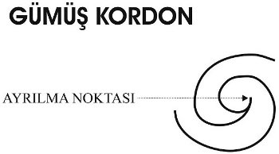

263-1-b) İtme, merkezkaç kuvvettir ve düşünce yoluyla bu kuvvet uyarılırsa, düşünce-formu içindeki ruhsal güç (insan irâdesi) ile Arzu beden arasında bir çarpışma meydana gelir. Bu, vicdan ve arzu arasındaki, yüksek doğa ve alçak doğa arasındaki savaştır. Ruhsal güç, direnişe rağmen düşünce formunu arzu-maddesinde giydirmeye çalışır. Beyni ve kasları kullanabilmek için bu gereklidir. İtme gücü ise toplanmış malzemeyi dağıtmaya ve düşünceyi kovmaya çabalar. Eğer ruhsal enerji güçlüyse onları beyin merkezlerine doğru olan yollarına yollayabilir ve onlar yaşam gücünü kullanırken ruhsal enerji, onların arzu maddesinden yapılmış giysilerini tutabilir. Böylece bu zorlayıcı eylem, hafızada mücadelenin ve zaferin canlı bir izlenimini bırakacaktır. Eğer eylem sonuçlanmadan ruhsal enerji tükenirse, itme kuvveti tarafından mağlubiyete uğratılacaktır ve bu sonuç da diğer tüm düşünce formları gibi enerjisini harcadıktan sonra hafızada saklanacaktır.
263-1-c) Düşünce formu, öldürücü Kayıtsızlık duygusuyla karşılaşırsa, kendi içinde varolan ruhsal güce bağlı olarak ya eylemi gerektirecek ya da kinetik enerjisi bittikten sonra yaşam bedenin yansıtıcı eterinde zayıf bir iz bırakacaktır.
263-2) Dış etkilerin zihinsel resimleri, hemen eylem gerektirmiyorlarsa, ürettikleri ve daha sonraki kullanım için saklanan düşüncelerle birlikte, anında yansıtıcı etere yansıtılabilirler. Zihin aracılığıyla etkin olan Ruh, bilinçli hafızanın deposuna anlık erişime sahiptir ve istediği zaman orada bulunan herhangi bir resmi, onu yeni ruhsal güçle donatmak, arzu bedene yansıtmak ve eyleme zorlamak için yeniden canlandırabilir. Ne zaman böyle bir resim bu şekilde kullanılırsa, canlılık, güç ve etkinlik kazanacaktır. Ve de bizde, güç çizgileri bırakacaktır. Ki bu çizgiler, ilgili eylemleri daha hızlı olmaya zorlayacaklardır. Böylece tekrarlama yoluyla, düşüncenin “güçlenmesi” ve “büyümesi” fenomeni ortaya çıkar.
264) 3. Bir düşünce formu kullanmanın üçüncü yolu da tavsiye etmek, bilgilendirmek amacıyla doğrudan düşünce transferinde olduğu gibi düşüncenin başka bir zihin üzerine yansıtılmasıdır. Veya tıpkı hipnozcunun kurbanını belli bir mesafeden etki altına almasında olduğu gibi düşünce, kişiyi eyleme zorlamak için doğrudan o kişinin Arzu bedenine de yöneltilebilir. Bu durumda düşüncenin yönlendirildiği kişi, kendisine empoze edilen düşünce sanki kendisininmiş gibi hareket eden hipnotize edilmiş kurbanla tamamen aynı şekilde davranacaktır. Eğer düşünce, kişinin eğilimleri ile uyuşuyorsa kişi, paragraf 1a’daki gibi hareket edecektir. Eğer düşünce kişinin doğasına ters ise bu durumda 1.b veya 1.c’de belirtildiği şekilde bir davranış gösterecektir.
265) Yansıtılmış bir düşünce-formu için yapılmış böyle bir çalışma tamamlandığında veya bu düşünce, gücünü hedefine varmak için boşuna girişimlerle harcayıp tükettiğinde, yaratıcısına geri döner ve beraberinde yolculuğunun silinmez kaydını da getirir. Bu düşün-
ce-formunun başarısı veya başarısızlığı, onun yaratıcısının yaşam bedenindeki yansıtıcı eterin negatif atomlarına kazınmıştır. Yaşam bedeninin yansıtıcı eter’i, düşünen kişinin yaşam ve eylem kayıtlarının (ki biz buna bazen bilinçaltı da diyoruz) bir kısmını oluşturur.
266) Bu kısım, bilinçli erişimine sahip olduğumuz hafızadan çok daha önemlidir. Çünkü bu hafıza, eksik ve aldatıcı duyusal algılamalardan oluşmuştur ve de istençli hafıza veya bilinçli zihin olarak da adlandırılabilir.
267) İstemdışı hafıza veya bilinçaltı zihin, henüz bizim hâkimiyetimiz altında olmamasına karşın, başka bir şekilde görünür hale gelir. Nasıl ki eter, çevredeki manzaranın bir kopyasını fotoğraf makinesindeki ışığa duyarlı filme taşır ve fotoğrafı çeken kişinin onu görüp görmediğine bakmaksızın en küçük detayları bile filme aktarırsa aynı şekilde havadaki eter de, soluduğumuz havada tüm çevremizin tam ve detaylı bir resmini beraberinde taşır. Bu resim, sadece maddesel şeyleri değil, Aura’mız içinde her an varolan koşulları da içerir. En sessiz düşünceler, duygular ve hisler akciğere, buradan da akciğerler tarafından kana gönderilirler. Kan, yaşam bedenin en yüksek ürünlerinden biridir. Çünkü besini vücudun tüm kısımlarına taşır ve Ego’nun direkt aracıdır. Kanın içerdiği resimler, ölümden sonraki evrede insanın kaderi hakkında hakem olarak iş görmek üzere yaşam bedenin negatif atomlarına kazınır.
268) Bilinçli veya bilinçaltı hafıza, tamamen bu yaşamın deneyimleriyle ilişkilidir ve yaşam bedendeki olayların izlenimlerinden oluşmuştur. Birkaç sayfa ileride bahsedilecek olan günahların bağışlanması hakkındaki açıklamamızda da görüleceği gibi bu izlenimler, değiştirilebilirler ve hatta imha edilebilirler. Bu değiştirme ve imha etme işlemi, izlenimlerin yaşam bedenin eterinden silinebilmesine bağlıdır.

269) Ayrıca bir bilinçötesi hafıza da vardır. Bu hafıza, bu yaşamda gizil ve gelişmemiş olsalar bile, önceki yaşamlarda edinilmiş tüm yeteneklerin ve kazanılmış bilgilerin deposudur. Bu kayıtlar, silinmez bir şekilde yaşam rûhuna kazınmışlardır. Ve kendilerini genellikle, tüm düşünce-formlarını canlandıran vicdan ve karakter olarak açığa vururlar. Ancak bu açığa vurma, maksimum seviyede gerçekleşmez. Bu bilinçötesi hafıza bazen öğüt verir. Bazen de karşı konulmaz bir güçle, akıl ve arzu ona karşı olsa bile eyleme zorlar.
270) Yaşam bedenleri pozitif olan birçok kadında ve yaşam bedenleri temiz ve kutsal bir yaşamla ve dua ve konsantrasyonla hassas bir hale gelmiş kadın veya erkek ilerlemiş insanlarda, yaşam rûhunun içinde bulunan bu bilinçötesi hafıza zaman zaman ve belli bir dereceye kadar, eylemi gerçekleşmeye zorlamak için zihin-maddesi ve arzu-maddesini giyinme zorunluluğundan kurtulur. Bilinçötesi hafıza, her zaman aklın hâkimiyetine boyun eğdirilmiş olma tehlikesine maruz kalmak ve belki de onun tarafından baskı altına alınmak zorunda değildir. Bazen kendisini, içe doğma veya içten öğretme biçiminde doğrudan yaşam bedenin yansıtıcı eteri aracılığıyla ifade eder. Onu fark etmeye ve emirlerini takip etmede ne kadar hevesli olursak o da, ebedi mutluluğumuz için bize o kadar sık konuşur.
271) Uyanık olduğu saatler boyunca süren faaliyetleri sebebiyle arzu beden ve zihin, yoğun bedeni sürekli tahrip ederler. Her düşünce ve hareket onun dokusunu bozar. Diğer yandan yaşam beden, sürekli olarak uyumu sağlama ve diğer araçların bozdukları şeyleri yeniden yapma uğraşısı içerisindedir. Ancak yaşam beden, düşüncelerin ve ani tutkuların güçlü saldırılarına tamamen karşı koyabilecek kadar güçlü değildir. Yavaş yavaş topraklarını kaybeder ve sonunda çöktüğü an gelir. Ve de yaşam bedenin “noktaları”, deyim yerindeyse “buruşurlar”. Yaşam akımı sinirlerde artık yeterli miktarda akmaz olur ve vücudun uykusu gelir. Düşünen kişi böylelikle faaliyetinde engellenmiş bir hale gelir ve çekilmeye zorlanır. Kişi çekilirken de arzu bedeni beraberinde götürür. Yüksek araçların bu çekilmesi, yaşam beden tarafından nüfuz edilmiş ve kapsanmış olan yoğun bedende, uyku dediğimiz bilinçsiz durumu meydana getirir.
272) Ancak uyku, genelde zannedildiği gibi kesinlikle eylemsiz bir durum değildir. Eğer öyle olsaydı vücut, sabah uyandığında akşam yatarkenki halinin aynısıyla karşılaşırdı. Aksine uyku, yoğun bir faaliyet evresidir ve ne kadar yoğun olursa değeri o kadar fazla olur. Zira uykuda, günün zihinsel ve fiziksel aktiviteleri sonucu dokuda oluşan zehirler atılır. Ayrıca dokular yeniden yapılır ve vücûdun ritmi yenilenir. Bu işlem ne kadar iyi yapılırsa uykudan elde edilecek fayda o kadar çok olur.
273) Arzu Âlemi, bir bilgelik ve ahenk okyanusudur. Daha düşük araçlar uykuda terk edildiklerinde Ego, zihni ve arzu bedeni bu okyanusun içine getirir. Ego’nun ilk uğraşısı, zihin ve Arzu bedenin ritim ve armonisini onarmaktır. Arzu âlemin ahenkli titreşimleri içlerinden aktıkça onların onarımları da gerçekleşir. Arzu âleminde, yaşam beden aracılığıyla yoğun bedende akan yaşam sıvısına benzeyen bir öz vardır. Yüksek araçlar adeta bu yaşam iksirinin içine dalarlar. Tekrar eski güçlerine kavuştuklarında, yoğun bedenin uyumasıyla bıraktıkları yaşam bedenindeki faaliyetlerine tekrar başlarlar. Bundan sonra yaşam beden, tekrar güneş enerjisi üzerinde yoğunlaşmaya başlar ve yoğun bedeni, onarım işleminde özellikle kimyasal eteri ortamı olarak kullanarak yeniden inşa eder.
274) Sonraki gündeki faaliyetlerin temelini oluşturan da, uyku esnasında farklı araçların bu faaliyetidir. Bu faaliyet olmaksızın yeniden-uyanma söz konusu olamazdı, zira aksi halde Ego, yorgunlukları sebebiyle faydasız hale gelmiş araçları terk etmek zorunda kalacaktı. Bu yorgunluğu ortadan kaldıran çalışma yapılmasaydı bedenler, tıpkı doğal trans halinde olduğu gibi uykuda kalacaklardı. İşte tam da bu armonize edici ve iyileştirici faaliyeti sebebiyle uyku, sağlığı korumada doktordan ve ilaçlardan daha iyidir. Sadece dinlenme, kesinlikle uykuyla kıyaslanamaz. Sadece yüksek araçlar Arzu âlemindeyken, atıkların uzaklaştırılması ve onarıcı gücün içeriye akması işlemleri gerçekleşir. Dinlenme esnasında yaşam bedenin, yaptığı işte dokular tarafından engellenmediği doğrudur. Zira dokuların faal hareketi ve kasların gerilmesiyle yaşam bedenin yaptığı iş tahrip olur. Fakat yine de yaşam beden, düşüncelerin yıkıcı enerjisi ile mücadele etmek zorundadır ve bu sebeple, uyku esnasında Arzu beden tarafından dışarıdan gönderilen iyileştirici gücü, uykuda aldığı gibi alamaz.
275) Bununla birlikte sık sık Arzu bedenin tamamen çekilmediği de olur; böylelikle ondan bir parça da duyusal algılamanın ve hafızanın aracı olan yaşam bedenle bağlantılı halde kalır. Bunun sonucu olarak da onarım, sadece kısmen gerçekleşir ve Arzu âlemin eylemleri ve sahneleri, rüyalar olarak fiziksel bilince girerler. Elbette ki pek çok rüyâ karmakarışıktır. Çünkü algılama ekseni, iki beden arasındaki uygun olmayan bağlantı sebebiyle eğrilmiştir. Hafıza da araçların bu uygunsuz ilişkisi nedeniyle karışıktır ve onarıcı gücün eksikliğinin bir sonucu olarak rüyâ dolu uyku, rahatsızdır ve beden, kendisini uyandığında yorgun hisseder.
276) Yaşam esnasında üçüz Rûh yâni Ego, zihin bağı ile bağlandığı üçüz bedenin üzerinde ve içinde çalışır. Bu çalışma, üçüz Rûhu varlık hâline getirir. Rûh, bedenin ruhlaşmış ürünüdür. Uygun besin nasıl maddesel anlamda yoğun bedeni besliyorsa, yoğun bedendeki rûhun doğru hareket etme ile sonuçlanan faaliyetleri de yoğun bedende Bilinçli Rûhun büyümesini sağlar. Güneşin yaşam bedendeki güçleri, yaşam bedenin yoğun beden üzerinde etkin olabilmesi için nasıl faal iseler ve yaşam bedeni besliyorlarsa, yoğun bedendeki eylemlerin hafızası da (Arzu bedenin arzuları, hisleri ve duyguları ile zihindeki düşünceler ve fikirler) Zihinsel Rûhun büyümesine yol açar. Aynı şekilde arzu bedenin en yüksek arzuları ve duyguları da Duygusal Rûhu biçimlendirirler.
277) Bu üçüz Rûh, üçüz can’ın üç yönden bilincini yükseltir.
278) Arzu bedenin özü olan Duygusal Rûh, Arzu bedenin ruhsal kopyası olan insan Rûhunun etkinliğini arttırır.
279) Zihinsel Rûh da Yaşam Rûhunun gücünü arttırır, zira Zihinsel Rûh, Yaşam Rûhunun maddesel kopyası olan yaşam bedenden oluşturulur.
280) Bilinçli Rûh da Tanrısal Rûhun bilincini arttırır. Çünkü Bilinçli Rûh, yoğun bedenin özüdür ve yoğun beden de Tanrısal Rûhun kopyasıdır.
Ölüm ve Araf[37]
281) Böylece insan, ölüm anı gelene kadar eker ve inşa eder. Ölüm anından sonra ekme, büyüme ve olgunlaşma zamanı artık geçmiştir. Hasat zamanı gelmiştir ve ölümün iskelet biçimi, kum saati ve orağıyla görünür. Bu, etkileyici bir semboldür. İskelet, vücudun görece kalıcı kısmını simgeler. Orak, Ruh tarafından hasat edilecek bu kalıcı kısmın, şu anda bitmekte olan yaşamın meyvesi olduğu olgusuna işaret eder. İskeletin elindeki kum saati ise değişmez yasalarla belirlenen zaman dolana dek saatin vurmayacağını belirtir. Zaman dolduğunda araçların ayrılması gerçekleşir. Bu sırada kişinin Fizik Âlemdeki yaşamı sona erdiğinden yoğun bedenini tutmasına gerek kalmaz. Daha önce de açıkladığımız gibi, aynı zamanda Fizik Âleme de ait olan yaşam beden, vücudun kafasından çıkar ve yoğun bedeni cansız halde bırakarak terk eder.
282) Yüksek araçların (Yaşam beden, Arzu beden ve Zihin) yoğun bedeni spiral biçimli bir hareketle terk ettikleri görülür. Onlarla birlikte yoğun bir atomun rûhu da gider. Burada giden, atomun kendisi değil de onun aracılığıyla etkin olan güçlerdir. Bitmiş olan yaşam boyunca yoğun beden aracılığıyla kazanılmış deneyimler bu özel atoma kazınmışlardır. Yoğun bedenin diğer bütün atomları zamanla yenilenirken bu tek atom, değişmeden kalır. Ve sadece bu yaşamda değil, bütün yaşamlarda değişmez. Bu atom, bütün yaşamlar boyunca hep aynı Ego tarafından kullanılan her yoğun bedenin değişmez kısmını oluşturur. Bu atom ancak ölümde, ölen bedenden çekilip alınır. Ki böylece bu atom, yeni bir fizik yaşamın şafağında, aynı Ego tarafından kullanılacak yeni bir yoğun bedenin oluşturulmasında çekirdek olarak işlev görür. Bu yüzden o, “tohum atom“ (seed-atom) olarak da adlandırılır. Tohum atom, yaşam boyunca kalbin sol kulakçığında yukarıya yakın bir yerde bulunur. Ölümde pnömo-gastrik sinirler vasıtasıyla beyne çıkar ve yüksek araçlarla birlikte beyindeki parietale ve occipital arasından yoğun bedeni terk eder.
283) Yüksek araçlar yoğun bedeni terk ettikten sonra da yoğun bedene hâlâ ince, parlak ve gümüş renkli bir kordonla bağlıdırlar. Bu kordon, biri düz, diğeri de ters halde ve uçlarından birbirine bağlanmış şekilde duran iki 6 rakamından oluşmuştur (Şekil 5a).
284) Bu kordonun bir ucu, “tohum atomu” aracılığıyla kalbe bağlanır. “Tohum atomu”nun kopması, kalbin durmasına sebep olur. Kordon, yaşam bedende bulunan geçmiş yaşamın filmi tekrar izlenmeden kopmaz. Ölümün gerçekleşmesinden sonraki üç günde bedenin yakılmaması veya tahnit edilmemesi çok önemlidir. Yaşam beden, yüksek araçlarla birlikte olduğu ve bunlar yoğun bedene gümüş kordon aracılığıyla hâlâ bağlı oldukları sürece kişinin yoğun bedenine yapılan her ölüm sonrası işlem veya yoğun bedenin yaralanması, o kişi tarafından belli bir ölçüde hissedilir.
285) Özellikle ölümden sonraki ilk üç günde cesedi yakma işleminden kaçınılmalıdır. Çünkü ceset üç günden önce yakılırsa geçmiş yaşamın filmini Arzu bedene kazıması gereken ve bu sürede sağlam kalması gereken yaşam beden de yanar.
286) Gümüş kordon, iki “6 figürünün” birleştiği yerden kopar. Yarısı yoğun bedende, öbür yarısı da yüksek araçlarda kalır. Ancak kordonun koptuğu bu andan itibaren yoğun beden tamamen ölür.
287) 1906 yılının başında Massachusetts Genel Hastane’sinde Doktor McDougall, ölüm esnasında normalde görünmeyen herhangi bir şeyin vücudu terk edip etmediğini eğer mümkünse tespit etmek için bir dizi deney gerçekleştirdi. Bu amaç için de 3 gramlık farklılıkları bile tespit edebilen bir terazi tasarladı.
288) Ölen kişi ve yatağı, terazinin bir kefesine konulurken diğer kefeye de uygun ağırlıklar yerleştirildi. Yapılan her denemede, ölen kişi son nefesini verdiği anda, şaşırtıcı bir biçimde terazinin ağırlıkla dolu kefesi hızla aşağıya inerken, ölen kişi ve yatağının bulunduğu diğer kefe de yukarıya gidiyordu. Böylelikle görünmeyen ancak ağırlığı ölçülebilen „bir şeyin“, ölümle vücudu terk ettiği anlaşılıyordu. Bu olayın ardından bütün gazeteler Doktor McDougall’ın „ruhun ağırlığını ölçtüğünü“ yazdılar.
289) Okültistler, modern bilmin her keşfini sevinçle karşılarlar, zira bu keşiflerle okült ilmin çok uzun zamandan beri öğrettiği olgular, değişmez bir şekilde onaylanmış olurlar. Doktor McDougall’ın deneyleri kesin bir şekilde göstermiştir ki, ölüm esnasında sıradan göz için görünmeyen bir şey, vücudu terk etmektedir. Ki bunu deneyimli durugörürler gözlemliyor ve Doktor McDougall’ın keşfinden yıllar önce biliyorlardı. Ve bu, derslerde ve konferanslarda öğretiliyordu.
290) Fakat bu görünmeyen „bir şey“, ruh değildir. Onunla ruh arasında çok büyük bir fark vardır. Gazeteciler, bilimadamlarının ruhun ağırlığını ölçmeyi başardıklarını sandıklarından yanlış sonuçlara vardılar. Ölçüm yapılan terazinin hassasiyeti 3 gram değil de bir buğday tanesinin ağırlığının milyonda biri kadar olsa dahi Ruhun ağırlığı ölçülemez. Çünkü Ruh, yüksek âlemlere aittir. Bilimadamının gerçekte ölçtüğü ise yaşam bedenin ağırlığıdır. Yaşam beden, Fizik Âlem’in dört eterinden oluşmuştur.
291) Gördüğümüz gibi bu eter türlerinin belli bir miktarı, insan vücudunun atomlarını çevreleyen eterin üzerine gelir ve fizik yaşam esnasında burada hapsolur. Bu da bitki, hayvan ve insanların ağırlığını çok az bir ölçüde arttırır. Ölümün gerçekleşmesiyle bu eter kaçar. Bu yüzden de Doktor McDougall’ın deneylerinde, insan ölümlerinden sonra tespit ettiği ağırlık azalması meydana gelmektedir.
292) Doktor McDougall terazi deneyini ölen hayvanlarda da yaptı. Köpeklerden biri St. Bernard tipi bir köpek olmasına rağmen hayvanlarda hiçbir ağırlık azalması görülmedi. Buradan, hayvanların ruhları olmadığı sonucuna varıldı. Fakat kısa bir zaman sonra Los Angeles Politeknik Okulu’nun Bilim Departmanı başkanı Prof. La V. Twinigg, fareler ve yavru kedileri bir kavanoza koyup ağızlarını sıkıca kapatarak deneyler yaptı. Sahip olduğu terazi, zamanının en hassas terazisiydi. Ve bu terazi, her tür nemden korunması için cam bir kutunun içine konulmuştu. Bu deneylerde, tüm hayvanların ölümde ağırlık kaybettiklerini ortaya koydu. 12,886 gram ağırlığındaki iri bir fare, ölümünde birden 3,1 miligram kaybetti. Diğer bir deneyde ise yavru bir kedi, önce 100 miligram, son nefesinde de aniden tekrar 60 miligram kaybetti. Bundan sonra da buharlaşma sebebiyle ağırlıkta yavaş yavaş azalma gözlendi.
293) Hassas teraziler kullanılarak hayvanların da bir yaşam bedene sahip olduğu görüldü. Böylelikle okült ilim öğretilerinin bu tezi de ispatlanmış oldu. St. Bernard köpeği ile yeterince hassas olmayan bir terazi ile yapılan deneyde, hayvanın ölüm esnasında ağırlık kaybetmemesi ise sadece hayvanların yaşam bedeninin, insanın yaşam bedeninden oransal olarak daha hafif olduğunu gösterir.
294) Kalpteki „gümüş kordon“ çözülüp de insan, yoğun bedeninden koptuğunda, Ego için en önemli an gelir çatar. Ölen bir kişinin yakınlarına, yüksek sesle ağlama ve sızlamanın ölen kişiye karşı işlenen en büyük suç olduğu ne kadar anlatılsa azdır. Çünkü o anda ölen kişi, en önemli mesele ile meşguldür. Geçmiş yaşamın değerinin önemli bir kısmı, ruhun bu meseleye ne kadar dikkat verebileceğine bağlıdır. Arzu âlemindeki insan yaşamını incelersek, bu konuyu daha iyi anlayabiliriz.
295) Ölen kişiye uyarıcı maddeler vermek de aynı şekilde büyük bir suçtur, zira uyarıcılar, yüksek araçları yoğun bedene birden bire geri çekerler. Bu da insanı büyük bir şiddetle sarsar. Bayılmak bir işkence değildir, ancak tekrar acı çekmeye devam etmesi için vücuda zorla geri çekilmek bir işkencedir. Bazı ölmüş kişiler araştırmacılara, bu şekilde saatlerce ölmek zorunda kaldıklarını ve akrabalarına sürekli olarak, iyilik sandıkları bu şeye son vererek kendilerinin ölmelerine izin vermeleri için yalvardıklarını anlatmışlardır.
296) İnsan, ruhsal gücüne ağır kurşun bir ağırlık gibi asılı bulunan (tıpkı önceki örneğimizdeki müzisyenin elindeki ağır eldiven gibi) yoğun bedeninden kurtulduğu anda, ruhsal gücüne belli bir ölçüde yeniden kavuşur ve yaşam bedenin bir kısmını oluşturan ve bilinçaltı hafızanın bulunduğu yer olan yansıtıcı eter’in negatif kutbundaki resimleri okuyabilir.
297) Geçmiş yaşamının tümü gözlerinin önünden, bir film şeridi gibi geçer. Ancak olaylar, sondan başa dizilmişlerdir. Öncelikle ölümden hemen önceki günler görünür, sonra da erkeklik veya kadınlık çağı, gençlik, çocukluk ve bebeklik çağları gelir. Her şey bu hafızaya kaydedilmiştir.
298) Ölen kişi, izlediği bu geçmiş yaşamına ait film karşısında bir izleyicidir. O, gelip geçen resimleri görür ve bu resimler onun yüksek araçları üzerinde izlenim bırakırlar. Ancak bu izlenimler, bu kişide herhangi bir duygu uyandırmaz. Kişide duygu uyanması ancak kişi, duygular ve heyecanlar âlemi olan Arzu âlemine girdiğinde gerçekleşeceklerdir. Kişi henüz daha Fizik Âlemin Eter Bölgesindedir.
299) Bu film, insanın uyanık kalacağı sürenin uzunluğuna bağlı olarak birkaç saatten birkaç güne dek sürebilir. Bazı insanlar sadece 12 saat uyanık kalabilirlerken bazıları günlerce uyanık kalabilirler. Bu film her durumda, kişi uyanık kalabildiği süre boyunca devam edecektir.
300) Ölümden sonraki yaşamın bu özelliği, insanın boğulurken veya yüksekten düşerken yaşadıklarına benzer. Böyle durumlarda da yaşam beden yoğun bedeni terk eder ve insan, yaşamının bir film şeridi gibi bir anda gözlerinin önünden geçtiğini görür, çünkü o anda bilincini kaybetmiştir. Elbette ki “gümüş kordon” bu durumlarda kopmaz, aksi takdirde tekrar yaşama dönüş gerçekleşmezdi.
301) Yaşam beden, dayanma gücünün sınırına eriştiğinde uyku olayını incelerken tarif ettiğimize benzer bir şekilde çöker. Fizik yaşamda Ego kendi araçlarını kontrol ettiği sürece bu çöküş, uyanık kalınan saatleri bitirir; ölümden sonra yaşam bedenin çöküşü ise yaşamın filmini sonlandırır ve insanı, Arzu âlemine girmeye zorlar. Gümüş kordon, “iki altı”nın birleştiği yerden kopar (bkz. Şekil 5a). Aynı olay uykuda da meydana gelir. Ancak önemli bir fark vardır: Ölümde yaşam beden, uykudaki gibi fizik bedeni içine almaz, tersine onun üzerinde yüzer. Yaşam beden mezarın üzerinde yüzer ve yoğun araçla (bedenle) birlikte çürür. Bu sebepten dolayı bir durugörür için mezarlığın, mide bulandırıcı bir manzarası vardır. Eğer durugörür’ün gördüğü bu manzarayı diğer insanlar da görmüş olsaydı, şu anki hijyen olmayan defin işlemi yerine çok daha akıllıca olan ölüleri yakma işlemi için insanları ikna etmek çok kolay olurdu. Çünkü ölüleri yakma işleminde, elementler bir anda ilk hallerine geri dönerler. Böylelikle de tiksindirici yavaş yavaş çürüme sahnelerine yol açılmamış olunur.
302) Yaşam bedenin terk edilmesinde de yapılan işlem, yoğun bedenin bırakılma işlemiyle aynıdır. Burada da, gelecekteki bir bedenlenmede yaşam bedeni oluşturmak için, tohum olarak kullanılmak üzere bir atomun yaşam güçleri alınır. Böylece insan, Arzu âlemine girişinde Arzu beden ve zihnin yanısıra yoğun ve yaşam bedenlerin tohum-atomlarını da birlikte getirir.
303) Eğer ölen insan, tüm arzularını geride bırakabilseydi Arzu bedeni oldukça hızlı bir şekilde ondan düşer ve onu göksel âleme girmesi için özgür bırakırdı. Ancak genelde bu olmaz. Çoğu insan, özellikle de yaşamının baharında ölenler, henüz dünya yaşamına birçok bağ ve ilgiyle zincirlidirler. Arzularını değiştirmemişlerdir, çünkü fizik bedenlerini kaybetmişlerdir. Hatta onların arzuları, (fizik âleme duyulan) şiddetli özlem nedeniyle daha da şiddetlenir. Bu da onları, ne yazık ki bunu fark etmemelerine rağmen hiç de hoş olmayan bir şekilde Arzu âleme bağlar. Fakat yaşlı insanlar ve uzun süren hastalık sebebiyle çok zayıflamış ve yaşam yorgunu olanlar, Arzu Âlemini çok hızlı aşarlar.
304) Bu meseleyi, olmuş meyveden çok kolayca düşen ve kendisine meyvenin etinden hiçbir şey kalmayan çekirdekle karşılaştırabiliriz. Olgunlaşmamış meyvede çekirdek, büyük bir sıkılıkla etli kısma bağlıdır. Fiziksel sağlıklarının ve güçlerinin iyi olduğu bir durumdayken bir kazaya uğramaları neticesinde fizik bedenlerini terk etmek zorunda kalan insanlar için ölüm, özellikle zordur. Çünkü bu kişiler, fizik yaşamın sayısız aktivitelerine saplanıp kalmışlardır ve henüz evlilik, aile, akrabalık, arkadaş, eğlence ve iş bağlarıyla bağlıdırlar.
305) Yaşamdan kaçmaya çalışmış ve intihar etmiş olan kişi ise, her zamanki gibi canlı olduğunu görecektir. En acıklı durum onunkidir. En kötüsü de onda tarifsiz bir “içi oyulmuşluk” duygusunun olmasıdır. Yumurta biçimli Aura’sının şimdiye kadar yoğun bedenini kapsayan kısmı boştur. Arzu beden, ayrılmış olan yoğun bedenin biçimini almış olsa da boş bir kabuk olma duygusu devam eder. Çünkü Somut Düşünce Bölgesindeki vücudun yaratıcı arketipi, boş bir kalıp olarak fizik vücudun gerçekte yaşayabileceği süre boyunca etkindir. Yaşamının baharında bile olsa doğal bir ölümle vefat eden kişide arketipin faaliyeti durur. Ve de Arzu beden, kendisini uydurarak formun tamamını kaplar. İntiharda ise “boş olmanın” korkunç duygusu kalır. Bu duygu ancak, olaylar normal akışında kalıp da normal ölümün gerçekleşmiş olacağı zaman son bulur.
306) İnsan, yer yaşamıyla bağlantılı arzuları bırakmadığı sürece Arzu bedeninde kalmak zorundadır. Bireyin gelişimi, daha yüksek bölgelere geçmeyi gerektirdiği için, Arzu Âlemindeki kalış doğal olarak arındırıcı olmalıdır ve de kişiyi, kendisini zincirleyen arzulardan kurtarmalıdır. Bunun nasıl olduğu en iyi, örneklerle anlaşılacaktır.
307) Dünya hayatında altınlarını sevmiş cimri kişi, ölümünden sonra da aynı şekilde onları sevmeye devam edecektir. Fakat şimdi Arzu âleminde altınları elleriyle kavrayabileceği bir yoğun bedeni artık yoktur ve en kötüsü de geçmiş yaşamında biriktirdiklerini bile tutamayacaktır. Belki de orada oturmak ve sevgili altınlarını ve hisse senetlerini görmek için kasasına gidecektir. Fakat birazdan mirasçılar görünecek ve belki de “cimri yaşlı aptal” hakkında şakalar yapacaklar. Mirasçılar, onu göremeyecekler ancak o, mirasçıları görecek ve duyacak. Kasasını açacaklar ve de o, altınlarını korumak için onların üzerine kapanacak. Fakat mirasçıların elleri onun vücudunun içinden geçecek, onun varlığından haberleri bile olmayacak, onunla ilgilenmeyecekler de. Ve de onun biriktirdiklerini harcamak üzere, onu keder ve çaresiz bir öfke içinde bırakarak oradan uzaklaşacaklar.
308) Cimri adam şimdi şiddetli acı duyuyor, çünkü acıları tamamen zihinsel türden acılardır. Önceden yoğun beden bu acıları bir ölçüde hafifletiyordu. Ancak Arzu âleminde bu acıların tam etkinliği vardır ve insan, altının ancak bir lânet olduğunu anlayana kadar acı çeker. Böylelikle yavaş yavaş kaderine razı olur ve en sonunda Arzu bedeninden kurtularak serbest kalır. Ancak şimdi gitmeye hazırdır.
309) Veya bir alkoliğin durumunu ele alalım. Bu kişi ölümünden sonra da yaşamındaki kadar alkollü içkileri sever. İçkiyi arzulayan yoğun beden değildir, çünkü yoğun beden, içkiden sadece hasta olur ve aslında ondan kaçınmak ister. Ve de farklı yollarla içki içilmesine çaresizce karşı koyar. Zira ayyaş kişinin Arzu bedeni, alkollü içkileri şiddetle arzulamaktadır ve yüksek titreşimlerin eğlencesini tadabilmesi için yoğun bedeni bu içkileri vücuda almaya zorlar. Bu arzu, yoğun bedenin ölümünden sonra da devam eder, fakat ayyaş kişinin Arzu bedeni şimdi, içmek için ne bir ağıza sahiptir, ne de içkileri içeride tutacak bir midesi vardır. Belki de –hatta kesinlikle- bu kişi araçlarını, yüksek titreşimlerin hazzını hiç olmazsa onların titreşimlerinden “indüklenerek” elde etmek için diğer alkoliklerin vücutlarına girmeye zorlayacaktır. Fakat bu, ona yeterli doyumu vermek için çok zayıftır. Bu kişi, bir viski fıçısına da girebilir, fakat bunun da bir yararı olmaz. Zira orada, içen bir kişinin sindirim organlarında oluşan gazlardan hiçbiri oluşmaz. O, hiçbir etki hissetmeyecektir ve de onun durumu, okyanustaki açık bir botta bulunan bir insana benzer. “Su, her yerde su, ancak içmek için bir damla bile yok!” diyerek büyük acılar çekecektir. Fakat zamanla o, bu özleminin yararsızlığını anlayacaktır. Bu dünya yaşamındaki pek çok arzumuz gibi bütün arzular, onları Arzu âleminde doyurma imkânı bulunmadığında ölürler. İçkici kimse de arındığında, en azından bu alışkanlık açısından bu “Araf” ya da ”arınma” durumunu terk etmeye ve göksel âleme girmeye hazırdır.
310) Bütün bunlardan görüyoruz ki, bizim için Araf veya cehennemi yaratan bir öcalıcı Tanrı yoktur. Aksine Araf veya cehennem, bizim kendi kötü alışkanlıklarımız ve eylemlerimizdir. Arzularımızın yoğunluğuna bağlı olarak, onlardan arınmamız için gerekli sürenin uzunluğu ve acının yoğunluğu değişir. Daha önce bahsedilen durumda içki içmeyi seven kişi için dünyadaki bütün mal varlığını kaybetmek onun için çok büyük bir sorun olmazdı. Hazinelere sahip olsa bile onun bunlara büyük bir bağlılığı bulunmazdı. Cimri kişiye de artık içki içemeyecek olmak büyük bir acı vermezdi. Yeryüzünde bir damla bile içki kalmamış olsa, büyük bir ihtimalle bu onu ilgilendirmezdi. Fakat cimri kişi tüm ilgisini altınlarına, alkolik kişi de içkisine vermişti. Böylece şaşmaz yasa, onların aşağı arzulardan ve kötü alışkanlıklarından arınabilmeleri için gereksinim duydukları şeyi her birine verir.
311) Bu, ölümü simgeleyen iskeletin elindeki orakla sembolize edilen yasadır. Ve de “insan ne ekerse, onu biçer” diyen yasadır. Bu, sebep ve sonuç yasasıdır ve üç âlemdeki tüm şeylere hükmeder. Ve her doğa âlemi (fizik, moral ve zihinsel) bu yasanın egemenliği altındadır. O her yerde amansız bir şekilde çalışır, her şeyi düzenler, bir yerde en küçük bir eylem bile bir karışıklık yarattığında dengeyi tekrar sağlar. Zira her eylemin bir karışıklık yaratması kaçınılmazdır. Sonuç, hemen veya yıllar sonra ve hatta yaşamlar sonra açığa çıkabilir, fakat bir zaman bir yerde, adil ve eşit bir karşılık muhakkak ki olacaktır. Öğrenci özellikle şuna çok dikkat etmelidir ki, bu yasanın işleyişi kesinlikle kişisel değildir. Doğada ne ödül bulunur ne de ceza. Her şey, değişmez bir yasanın sonucudur. Bu yasanın çalışma şekli, sonraki bölümde daha etraflıca anlatılacaktır. Orada göreceğiz ki bu yasa, insan evriminde de geçerli olan başka bir evrensel Büyük Yasa ile bağlantılıdır. Şu anda açıkladığımız yasa, Sebep ve Sonuç Yasası olarak adlandırılır.
312) Yine bu yasa Arzu âleminde insanı, arzularından arındırır ve onun zayıflıklarını ve kötü alışkanlıklarını düzeltir. Böylelikle insan, gelişiminin önündeki bütün engellerden kurtulmuş olur. İnsanı bu amaca en kısa yoldan ulaştırmak için yasa, mümkün olan en uygun yöntemle ve en az acı çektirerek bu işi gerçekleştirir. Fakat kaydedilmesi gereken bir husus da, bir kişi kötü ahlaklı davranmış veya başkalarına haksızlık yapmış fakat daha sonra bu hataların üstesinden gelmiş ya da bu hatalarına pişman olmuş ve de mümkün olduğunca yaptığı kötü şeyleri telafi etmeye çalışmışsa; pişmanlık, kendini düzeltme ve hatalarını telâfi yoluyla yapmış olduğu ahlaksızlıklardan ve kötü eylemlerden kurtulur. Denge, böylelikle yeniden kurulmuş olur. Ve de bundan, bu dünyâ yaşamında gerekli ders alınmış olur, ki bu da ölümden sonra bu konuda ızdırap çekmemeyi sağlayacaktır.
313) Arzu âleminde yaşam, fizik âlemdeki yaşamdan yaklaşık olarak üç kat daha hızlı geçer. Fizik âlemde 50 yaşına gelmiş bir insan, Arzu âleminde aynı olayları yaklaşık 16 yılda yaşardı. Elbette ki bu, genel bir ölçüdür. Ancak Arzu âleminde, Fizik âleme göre belirtilen orandan çok daha fazla yaşayan insanlar vardır. Birkaç büyük arzu ile yaşamlarını sürdürmüş diğer insanlar ise Arzu âlemini çok daha kısa sürede geçerler. Fakat yukarıda verilmiş olan oran, günümüzdeki ortalama insan için doğrudur.
314) Yoğun bedeni terk ederken insanın geçmiş yaşamının, resimler halinde gözlerinin önünden geçtiğinden bahsetmiştik. Ancak kişi bu anda, bu resimlere ilişkin hiçbir duygu hissetmez.
315) Kişinin Arzu âlemindeki yaşamı esnasında da bu yaşam resimleri aynı şekilde sondan başa doğru geçer. Ancak insan artık, resimler birbiri ardına önünden geçerken, sahip olabileceği bütün duygulara sahiptir. Şimdi kişi, geçmiş yaşamındaki her olayı yeniden yaşamaktadır. Ve de birisine haksızlık yaptığı bir noktaya gelince bu haksızlığı, aynen o insanın hissettiği gibi hisseder. Başkalarında yarattığı tüm üzüntü ve acıları şimdi o yaşamaktadır ve böylelikle, sebep olduğu incinmenin ne kadar acı verici olduğunu ve sebep olduğu kedere dayanmanın ne kadar zor olduğunu öğrenir. Buna ek olarak – daha önce de belirtildiği gibi- hissedilen acı, çok daha yakıcıdır, zira artık acıyı hafifleten yoğun beden yoktur. Belki de bu yüzden acılar, güç olarak kazandıklarını zaman olarak kaybetsinler diye yaşamın hızı burada üç katına çıkar. Doğanın ölçüsü, olağanüstü âdil ve gerçektir.
316) Ölüm sonrası varoluşun bu evresine ilişkin bir başka özellik daha vardır. Bu da, Arzu âleminde (daha önce belirtildiği gibi) mesafelerin neredeyse tamamen kaybolması olgusudur. Bir insan öldüğünde, bir anda yaşam bedenin içine doğru genişlemiş gibi görünür. Ve de insan kendisini çok büyük ölçüde büyümüş gibi görür. Gerçekte beden büyümez, fakat algısal yetiler (perceptive faculties), her biri çok yakın gibi görünen farklı kaynaklardan çok fazla izlenim alır. Aynı şey Arzu beden için de geçerlidir. Kişiye, birlikte yeryüzünde yaşadığı ve herhangi bir şekilde ilişkili olduğu bütün insanlarda sanki kendisi mevcutmuş gibi gelir. Ve de insanlarla olan bu ilişkinin şimdi düzeltilmesi gerekmektedir. Eğer o, San Fransisco’da bir adamı ve New York’ta da başka bir adamı incitmişse, kendisinden birer parçanın bu iki yerde olduğunu hissedecektir. Bu duygu da ona, parçalara ayrılmış olma hissini verecektir.
317) Öğrenci şimdi, arınma sırasında geçmiş yaşama ait filmin önemini anlayacaktır. Zira orada bu film şeridi, sınırları kesin bir şekilde belirlenmiş duygular içerisinde gerçeklenmektedir. Eğer bu işlem uzun sürer ve bu esnada insan rahatsız edilmezse, Arzu bedene kazınmış tam ve açık bir izlenim, Arzu âlemindeki yaşamı daha canlı ve bilinçli kılacaktır. Böylelikle de arınma, daha ayrıntılı bir şekilde gerçekleşebilir. Halbuki ölüm döşeğindeki ölümden sonra ve sonraki üç gün içerisinde ümitsizlik ve acı içinde yapılacak sesli feryatlar, -daha önce de belirttiğimiz gibi- ölen insanın geçmiş yaşamından, sadece bulanık ve belli belirsiz izlenimler almasına neden olur. Arzu bedenine derin ve açık bir izlenim kazımış olan can, geçmiş yaşamının hatalarını çok daha açık ve belirgin hissedecektir. Etrafının acısı ve kederi sebebiyle bunu başaramamış can ise, geçmiş yaşamındaki hataları ancak belli belirsiz ve bulanık bir şekilde duyumsayacaktır. Arzu âlemde kişinin şu anda varolan acılarına sebep olan şeylere ilişkin duyguları, eğer bu duygular yeterince uzun bir film izleniminden çıkarılmışlarsa çok daha belirgin olacaktır.
318) Bu keskin ve açık duygu, gelecekteki yaşamlar için çok büyük öneme sahiptir. Bu duygu, Arzu bedenin tohum atomuna kendi silinemez damgasını vurur. Deneyimler sonraki yaşamlarda unutulacaktır ancak Duygu hep kalacaktır. Sonraki yaşamlarda daha önce işlenmiş bir hatanın aynısını işleme olasılığı ortaya çıkarsa bu duygu, bizi açık ve şüphe götürmez bir şekilde uyaracaktır. Bu, bizi uyaran ve nedenini bilmediğimiz “sessiz ve alçak tonlu ses”tir. Ancak geçmiş yaşamın filmi ne kadar açık ve belirgin ise, bu sesi o kadar sık, güçlü ve net duyarız. Böylece, ölümden sonra çıkan ruhu sessizlik içinde bırakmanın ne kadar önemli olduğunu görürüz. Bu şekilde hareket ederek kişinin, yeni sona ermiş olan hayatından mümkün olan en fazla faydayı elde etmesini ve aynı hataları tekrarlamasının önüne geçebilmesini sağlamış oluruz. Bizim bencil ve histerik yakınmalarımız ölen kişiyi, henüz sona ermiş yaşamının sonuçlarından mahrum bırakmamız anlamına gelecektir.
319) Araf’ın görevi, zararlı alışkanlıkları doyumdan mahrum ederek onların kökünü kazımaktır. Sahtekârlığı, acımasızlığı, hoşgörüsüzlüğü vesaire sebebiyle kişi, diğer insanlara çektirdiği acıların aynısını burada çeker. Bu acılardan da kişi, sonraki yaşamlarında diğer insanlara karşı şefkatli, dürüst ve hoşgörülü olmayı öğrenir. Böylelikle kişi, bu faydalı durumun varlığı sayesinde fazileti ve doğru davranışı kavrar. Ve kişi yeniden doğduğunda kötü alışkanlıklarından kurtulmuştur ve bundan sonra işleyeceği her kötü hata, onun kendi özgür iradesinden kaynaklanmaktadır. Geçmiş yaşamdaki kötü hataları tekrarlama eğilimi hep kalır. Bunun için de doğru olanı, bilinçli olarak ve kendi özgür irademizle yapmayı öğrenmeliyiz. Sık sık bu eğilimler bizi ayartmaya çalışacak ve böylelikle de bize, kötü ahlak ve bozukluğun tarafından merhamet ve erdem’in bulunduğu tarafa geçme fırsatı yaratacaktır. Hataları temizleyerek ve geçmiş yaşamlardaki kötü eylemleri bertaraf ederek büyüyen bir duyguya sahip oluruz. Bu duygu bize, doğru eylem tarzını bilmede ve ayartılmanın tuzak ve hilelerine karşı dirençli olmada yardım eder. Eğer bu duyguya önem verir ve kendimizi bu özel kötülükten uzak tutarsak ayartılma kesilecektir. Böylelikle kendimizi bu kötülükten ebediyen kurtarmış oluruz. Eğer boyun eğersek öncekinden daha fazla acı çekmeye başlarız. Bu acılar, şu altın kurala göre yaşamayı öğrenene kadar devam eder: Azgının yolu zordur. Bu kurala uygun yaşamayı başardıktan sonra bile henüz hedefe ulaşabilmiş değilizdir. Onların bize iyilik yapmaları için bizim başkalarına iyilik yapmamız da aslında bencilce bir davranıştır. İyiliği, kişilerin bize olan davranışından bağımsız olarak yapmayı zamanla öğrenmeliyiz. İsa’nın söylediği gibi düşmanlarımızı bile sevmeliyiz.
320) Arınmanın bu yöntemini ve amacını bilmek, insan için paha biçilmez bir hazinedir. Zira ancak bu şekilde, Araf’ımızı daha burada ve şimdi, gün be gün yaşamak ve böylelikle normalde yapabileceğimizden çok daha hızlı yol kat etmek bizim için mümkün olur. Bu kitabın son kısımlarında, ruhsal görüş’ün gelişimi için gerekli olan arınmaya yönelik bir alıştırma verilecektir. Bu alıştırma, her gün yatmadan önce gün içinde olan olaylar üzerinde düşünmeyi içermektedir. Böylelikle günün tüm olaylarını sondan başa doğru gözden geçiririz. Bu olayların özellikle ahlaki yönüne dikkatimizi veririz. Ve de her bir olayda eylemler, ruhsal tutum ve alışkanlıklar yönünden doğru mu yanlış mı davrandığımızı tespit ederiz. Bu şekilde kendi kendimizi eleştirir ve hatalarımızla kötü eylemlerimizi bulup düzeltmeye çalışırsak, Araf’taki arınma zamanını oldukça kısaltabiliriz ve hatta bu arınmaya gerek bile kalmaz ve ölümden sonra doğrudan birinci cennete geçeriz. Eğer zayıflıklarımızla böyle bilinçli bir şekilde mücadele edersek, evrim okulunda oldukça önemli ilerlemeler kaydederiz. Eylemlerimizi düzeltmede başarısız olsak bile, kendimizi eleştirme yönteminden çok büyük yarar görürüz. Zira bu şekilde kendimizde iyiye doğru bir istek yaratırız ve bunun da zamanla doğru eyleme yol açacağı muhakkaktır.
321) Günlük olayları gözden geçirirken ve hatalarımız için kendimizi suçlarken, objektif bir şekilde iyi eylemlerimizi de takdir etmeyi ve daha iyi davranmaya kendi kendimize söz vermeyi de kesinlikle unutmamalıyız. Bu şekilde iyi’yi onaylamayla arttırır ve kötü’yü de suçlamayla azaltmış oluruz. Pişmanlık ve kendini düzeltme de aynı şekilde arınma sürecini kısaltmada güçlü faktörlerdir. Zira doğa, hiçbir zaman faydasız işlemlerle gücünü boşa harcamaz. Eğer geçen yaşamımızda belli alışkanlıklarımızın ve eylemlerimizin yarattığı haksızlıkların farkına varır ve haksızlığı telafi etmeye ve kötü alışkanlığı bırakmaya azmedersek, bilinçaltı hafızadan onların resimlerini sileriz. Böylelikle onlar, ölümden sonra bizi yargılamak için karşımızda bulunmazlar. Bir yanlışın zararını tazmin edemesek bile, pişmanlığımızdaki içtenlik kâfi gelecektir. Doğanın amacı, öç almak değildir. Kurbanlarımıza, bu uğradıkları zararın ‘tazminatı’ başka şekillerde verilecektir.
322) Genellikle gelecekteki yaşamlar için öngörülmüş pek çok ilerleme, yaşadığı her anı çok iyi değerlendiren ve kendisini yargılayarak karakterini düzelten ve kötü alışkanlıkları bırakan kişiye şimdiki yaşamında ulaştırılır. Belirttiğimiz bu alıştırmayı okuyucuya şiddetle tavsiye ederiz. Bu alıştırma, bu kitabın belki de en önemli öğretisidir.
Sınır bölgesi
323) Araf, Arzu âleminin üç aşağı bölgesini kaplar. Birinci cennet, üstteki üç bölgede yer alır. Ortadaki bölge ise bir tür sınırdır. Bu sınır bölgesi, ne cennettir, ne de cehennemdir. Burada dürüst, namuslu ve hiç kimseye kötülük yapmamış insanlara rastlarız. Onlar bu bölgededirler, çünkü yaşamlarında dünyevi işlere o kadar dalmışlardır ki yüce bir yaşamı hiç düşünmemişlerdir. Onlar için Arzu âlem, tarif edilmez bir monotonluk halidir. Burada ne “iş” vardır, ve ne de onun yerine koyabilecekleri bir şey vardır. Bu kişiler, çeklerden ve hesap defterlerinden daha yüksek şeyleri düşünmeyi öğrenene kadar burada çok zor zamanları olacaktır. Yaşam problemi hakkında düşünmüş, “ölümün her şeyin sonu olduğu” sonucuna varmış ve maddesel duyuların ötesindeki şeylerin varlığını inkâr etmiş insanlar da bu korkunç monotonluğu hissedeceklerdir. Onlar, bilincin yokedileceğini sanıyorlardı, fakat burada kendilerini, etrafındaki kişileri ve şeyleri çok daha iyi bir şekilde algılar durumda bulurlar. Onlar bu şeyleri, hararetli bir şekilde inkâr etmeye alışmışlardı ve böylece kendilerini Arzu âleminin bir duyusal yanılsama (halüsinasyon) olduğuna inandırmışlardı. Onların sık sık burada, “bu ne zaman bitecek? Bu ne zaman bitecek?” diye ümitsizce bağırdıkları duyulur.
324) Böyle insanlar gerçekten de acıklı bir konumdadırlar. Genellikle her türlü yardım alanının dışındadırlar ve diğer insanların pek çoğundan daha fazla azap çekerler. Ayrıca, gelecekteki yaşamda kullanmak için beden inşasının öğretildiği göksel âlemde, bu kişilerin hemen hemen hiç yaşamları yoktur. Böylece bu kişiler, tüm kristalleştirici düşüncelerini, gelecekteki yaşam için inşa edecekleri herhangi bir bedene atarlar. Sonuçta da tüberkülozlularda da görebileceğimiz gibi kötü eğilimler gösteren bir beden meydana gelir. Bazen böyle zayıf bedenlerin bu şekilde çektikleri azap, bu bedenlerin içindeki can’ın düşüncelerini Tanrı’ya çevirmelerine sebep olur. Bu şekilde de evrimlerinde ilerleyebilirler. Fakat materyalist zihinde, en büyük tehlike olan rûhla temâsı kaybetme ve kovulmuş olma tehlikesi vardır. Bu yüzden Büyük Biraderler, son yüzyıl boyunca Batı Dünyâsının kaderi ile çok ciddi olarak endişelenmişlerdir. Eğer onların bu özel lütufkâr çabaları olmasaydı, yanında Fransız Devrimi’nin çocuk oyuncağı gibi kalacağı bir sosyal felaketle karşılaşırdık. Deneyimli bir durugörür, insanlığın, tüm kıtaları denize gömecek bir felâketten nasıl kıl payı kurtulduğunu görebilir. 18. bölümde okuyucu, materyalizm ile yanardağ püskürmeleri arasında nasıl bir ilişki olduğunu gösteren ayrıntılı ve tam bir açıklamayı bulacaktır. Şüpheciler (skeptikler), olguları ve sayıları açıklayamadıkları zaman hep yaptıkları gibi bunu bir “tesâdüf” olarak görseler de Vezüv yanardağının patlama listesi, böyle bir ilişkinin varlığını doğrular görünmektedir.
Birinci Cennet
325) Arınmış can, Araf’taki kalışı sona erdiğinde birinci cennete çıkar. Bu cennet, Arzu Âlemin yüksekteki üç Bölgesinde yer alır. Can’ın çekmiş olduğu azapların sonuçları, Arzu bedenin tohum-atomuna dahil edilir. Bu tohum-atom cana, doğru hissetme yeteneğini verir. Bu yetenek gelecekte, iyiye yönelme ve kötüden kaçınma tepi’si olarak çalışır. Burada da geçmiş yaşamın filmi sondan başa doğru tekrar geçecektir, ancak bu defa duyguların temelini, kişinin yaptığı iyi işler oluşturur. Başkalarına yardım ettiğimiz sahnelere geldiğimizde, o anda yaşamış olduğumuz yardım sevincinin aynısını bir kez daha yaşarız ve aynı zamanda yardım ettiğimiz kişilerin minnettarlığını da hissederiz. Bize başkalarının yardım ettiği sahnelere geldiğimizde de, bize yardım edenler için hissetmiş olduğumuz minnettarlığı tekrar hissederiz. Buradan da bize yapılmış olan iyiliklere minnettar olmanın ne kadar önemli olduğunu görürüz. Cennetteki mutluluğumuz, başkalarını ne kadar sevindirdiğimize ve başkalarının bize yaptığı iyilikleri ne kadar takdir ettiğimize bağlıdır.
326) İnsan şunun farkına varmalıdır ki, bir şeyler vermenin ölçüsü, verilen miktara bağlı değildir. Hatta gelişigüzel para vermek, kötü bir davranış bile olabilir. İyi bir amaç için para vermek doğrudur, ancak hizmet etmek bundan bin kat daha iyidir. Whitman’ın söylediği gibi:
Bak! Ne ders veririm, ne de küçük bir sadaka
Verirsem ben, kendimi veririm infaka
327) Güzel bir bakış, güven ifâdesi, anlayışlı ve sevgi dolu yardımseverlik –bunlar, zengin olunmadan da verilebilecek şeylerdir. Dahası, yoksul birine her şeyden önce kendisine yardım edebilmesi için yardım etmeliyiz. Bu yardım fiziksel, parasal, moral veya duygusal bir yardım olabilir. Ancak bunu yaparken yardım ettiğimiz kişinin bize veya başkalarına bağımlı hale gelmesine yol açmamalıyız.
328) Vermenin etik değeri ve ruhsal bir ders olarak veren kişi üzerinde yarattığı etki, en güzel Lowell’ın şiiri “Sir Launfal’ın Vizyonu”nda ifade edilmiştir. Genç ve hırslı şövalye Sir Launfal, Kutsal Kâse’yi aramak için ışıltılı donanımı ile görkemli atına binerek kalesinden ayrılır. Kalkanının üzerinde, uysal ve alçakgönüllü kurtarıcımızın şefkatinin ve merhametinin sembolü olan haç parlamaktadır. Fakat şövalyenin kalbi, gururla doludur ve o kalp, fakir ve muhtaçları kibirle hor görmektedir. Şövalye yolda kendisinden sadaka isteyen bir cüzamlıya rastlar ve ona küçümseyici bakışlarla, tıpkı bir sokak köpeğinin önüne kemik atar gibi bir altın para atar, fakat:
Yerden almadı altını, düşmüş olsa da cüzama
Verse de acı, yarasının kabukları adama
Garibin hayır duası daha iyidir muhakkak
Ellerim bomboş döndüm ben onun kapısından ancak
Sadece bir avuç dolusu verme fakiri horlayarak
Ancak değersiz altın vermiş olursun kendini zorlayarak
Ama kim ki verir az meteliğini yoktan
Erişir sevdiği gizli İsâ’ya çoktan
Gösterir her şeyi kaplayan güzelliğini kalbi
Ve her şeyi sarıp birleştirir bir ip gibi
Elin alabileceğinden çok fazladır armağanı
Onun kalbi yenmiştir hırslı avuçlarını
Bir Tanrı izler ve onu hazine olarak getirir
Karanlıkta ölmek üzere olan rûha yetirir
Sir Launfal dönüşünde kalesine başka birinin sahip olduğunu görür ve kapıdan sürülür:
Yaşlı bir adam, zayıf ve bitkin
Kutsal Kâse’yi aramaktan bezgin
Topraklarını kaybetmişti ama umursamadı hiç
Artık parlamıyordu çünkü giysisindeki haç
Ama kalbin derinliklerinde vardı bir işâret
Mazlumların ve fakirlerin bıraktığı alâmet
Tekrar karşılaşır, kendisinden yine sadaka isteyen cüzamlıyla. Ancak onu bu defa çok farklı bir şekilde yanıtlar:
Ve Sir Launfal dedi: “Bil ki gördüm sende
Çarmıh’ta ölmüş O’nun bir resmini ben de
Sana da dünyâ dikenden bir taç ördü
Sana da vurdu o, seni de hor gördü
Yaşamında hissettin kutsal acıyı,
Elin, ayağın ve vücudundaki sancıyı
Uysal Meryem’in Oğlu, lütfet bana
Bak, onunla veriyorum kendimi Sana
Cüzamlının gözlerine bakınca onu hatırlar ve tanır:
Onun kalbi toz ve küldü
Tek ekmeğini ikiye böldü
Derenin kenarındaki buzu bölerek
Sağladı cüzamlıya yiyecek ve içecek
Bu anda bir mucize meydana gelir:
Cüzzamlı inlemiyordu artık
Başında vardı bir halka, saf ışık
....
Ve sesi, sessizlikten yumuşaktı ve daha ince
‘Benim! Kalk ve korkma!’ dedi sâkince
Birçok memlekette boşu boşuna niçin
Harcadın ömrünü Kutsal Kâse için
O burada, elinde! Sen buldun, bak!
Dereden onu benim için doldurarak
Bu ekmek, senin için parçalanmış bedenim
Bu su ise ırmaktan dökülmüş kanım
Böyle olur kutsal akşam yemeği
Paylaşırsak başkasının ihtiyacı olan her neyi
Paylaştığımızdır asıl, değil verdiğimiz
Zira kalpsiz verme, yetersiz
Sadakayla birlikte verirsen kendini
Besler bu seni, fakir komşunu ve Beni.”
329) Birinci cennet, içinde bir damla bile acılığın olmadığı bir sevinç yeridir. Rûh, maddesel ve dünyâsal koşulların ötesindedir. Ve geçmiş yaşamı şimdi yeniden yaşıyormuş gibi, o yaşamdaki tüm iyilikleri emer. Burada, onun yaşamı boyunca peşinden koştuğu tüm yüksek emelleri tam ölçüde gerçekleşir. Burası bir dinlenme yeridir ve yaşanmış hayat ne kadar sert geçmişse, huzur da burada o kadar tatlı hissedilecektir. Burada hastalık, dert ve acı bilinmez. Burası spritüalistlerin yaz ülkesidir. Yine burası, dindar Hıristiyanların düşünceleriyle, ‘Yeni Kudüs’ü inşa ettikleri yerdir. Güzel evler, çiçekler vb. şeylere sahip olmayı arzu etmiş olanların istedikleri her şeyi elde edebilirler. Bu istedikleri şeyleri kendilerine, sübtil arzu maddesinden düşünce yoluyla yaparlar. Yine de bu şeyler, onlar için gerçek ve somuttur. Bu tıpkı dünyâdaki evlerimizin bizim için gerçek ve somut olması gibidir. Burada herkes, dünyâ yaşamında eksikliğini duyduğu şeylerin doyumunu elde eder.
330) Bir grup, burada özellikle güzel bir yaşam sürer: Çocuklar. Eğer onları görebilmiş olsaydık, onlarla ilgili acılarımız hemen son bulurdu. Arzu bedenin doğumundan –ki bu yaklaşık 14. yıla denk gelir- önce ölen bir çocuk, birinci Cennet’ten daha yukarıya çıkamaz. Çünkü çocuk, yaptığı eylemlerden sorumlu değildir. Nasıl doğmamış bebek, anne karnında hareket ederek anneye verdiği acılardan sorumlu tutulamazsa tüm çocuklar da yaptıklarından sorumlu tutulamazlar. Bu sebeple çocuk Araf’ta hiç kalmaz ve dolayısıyla da acı çekmez. Canlanmamış olan ölmeyecektir. Böylece çocuğun Arzu bedeni, zihni ile birlikte yeni bir doğuma kadar varolmaya devam edecektir. Bu sebeple bazı çocuklar, ileride vereceğimiz örnekte de göreceğimiz gibi önceki dünyâ yaşamlarını hatırlayabilmeye yatkındırlar.
331) Böyle çocuklar için birinci Cennet, Yeniden Doğuş için yeni bir fırsat çıkıncaya kadar bir ilâ yirmi sene arasında kaldıkları bir bekleme yeridir. Ancak onlar burada sadece beklemezler. Bu süre esnasında birçok ilerleme de kaydederler.
332) Bir çocuk öldüğünde her zaman onu öte tarafta bekleyen akrabalar bulunur. Şayet ölen çocuğun kimsesi yoksa, yer yaşamlarında severek çocuklara “annelik” yapmış olan ve bu küçük ve yalnız varlığı sevinçle kabul edecek insanlar vardır. Arzu maddesinin hamur gibi yoğrulabilir olma özelliği, çocuklar için bu maddeden mükemmel canlı oyuncaklar yapılabilmesine imkân verir. Bu sâyede de çocukların buradaki yaşamı eşsiz ve güzel bir oyun hâline dönüşür. Ancak burada onların eğitimleri de ihmal edilmez. Çocuklar, yaşlarına bakılmaksızın mizaçlarına göre sınıflara ayrılırlar. Arzu âleminde, iyi ve kötü tutkuların davranış ve mutluluk üzerindeki etkileri hakkında eğitici örnekler vermek kolaydır. Bu dersler, çocuğun duyarlı ve hassas Arzu bedenine silinemez bir şekilde kazınır ve yeniden doğumda da aynı şekilde kalırlar. Soylu bir yaşam süren çoğu insan bu soyluluğu büyük oranda, aldığı bu eğitime borçludur. Zayıf bir Can doğduğunda Merhametliler (evrimimize kılavuzluk eden görünmez Liderler) onun yaşamının ilk yıllarında ölmesine neden olurlar. Böylece bu zayıf Can, olası zor bir yaşama hazırlanması için, yukarıda bahsedilen özel eğitimi alabilir. Kişi ölürken yakınlarının feryatlarıyla rahatsız edilmişse veya bir savaş alanında ya da bir kazada hayatını kaybetmişse, Arzu bedenine kazınmış olan yazı çok zayıftır ve özellikle böyle kişiler için yukarıda bahsettiğimiz öldürme olayı meydana geldiği görülmektedir. Böyle ölen bir kişi, ölümünden sonraki varlığında, duyguları gerekli yoğunlukta deneyimleyemez. Bu eksiklik, onun yeniden doğup erken yaşlarda tekrar ölmesiyle telâfi edilir. Cennet yaşamında böyle bir çocukla ilgilenme işi çoğu kez, bu bozukluğa sebep olmuş kişilere düşer. Böylelikle bu kişiler, suçlarını telâfi etme ve daha iyi olmayı öğrenme fırsatını elde ederler. Ya da belki de onlar, zarar verdikleri kişilerin anne babası olurlar ve dünyâda yaşadıkları birkaç yıl boyunca onlarla ilgilenirler. Çocukların ölümlerinde histerik feryatlar kopsa da önemli değildir. Çünkü çocuğun Yaşam bedeninde önemli herhangi bir deneyim sonucunun resmi bulunmaz.
333) Bu cennet aynı zamanda dünyâ yaşamlarında çalışkan, sanata yetenekli veyâ fedâkar birisi olmuş bütün kişiler için bir ilerleme yeridir. Öğrenci ve filozof burada, dünyânın tüm kütüphânelerine anında erişim imkânına sahiptir. Ressamda ise, sürekli değişen renk kombinasyonlarının sonsuz zevki bulunur. O, kısa sürede düşüncelerini bu renklere uydurmayı ve bu renkleri istediği gibi değiştirmeyi öğrenir. Onun eserleri, donuk dünyâ renkleri ile çalışan biri için imkânsız olan bir parlaklıkta ve canlılıktadır. Burada tasarımlarını, canlı ve parlak bir malzemeyle ve ruhunu sevinçle dolduran bir kolaylıkla gerçekleştirebilir. Müzisyen ise, sanatını tam olarak icrâ edebileceği yere henüz ulaşmamıştır. Fizik Âlem, bir Form âlemidir. İçinde Araf’ın ve birinci Cennetin bulunduğu Arzu âlem, özellikle bir Renk âlemidir. Fakat ikinci ve üçüncü Cennette bulunan Düşünce âlemi, bir Ses âlemidir. Göksel müzik, gerçek bir olgudur ve sadece simgesel bir ifâde değildir. Pisagor, kürelerin müziğinden bahsederken masal anlatmıyordu. Zira her cennet (göksel) kürenin kendi belirli bir sesi vardır ve bütün göksel küreler birlikte, Goethe’nin cennette geçen “Faust” prologunda da belirttiği gibi göksel senfoniyi oluştururlar. “Faust”ta Yüce Melek Rafael şöyle hitap eder:
“Güneş söyler kadim şarkısını
Kardeş kürelere bir şarkı, rakip
Ve tamamlar yazgısını
Yıl boyunca şimşekli yolunu çizip“
334) Göksel müziğin yankıları burada Fizik Âlemde bulunan bizlere bile ulaşır. Ele geçmez ve aldatıcı olmalarına ve diğer sanat dallarındaki eserler gibi (örn. bir kitap, bir resim veya bir kitap gibi) kalıcı olarak yaratılamamalarına rağmen onlar, bizim en değerli varlığımızdır. Fizik âlemde bir ses, doğduktan sonra ölür ve kaybolur. Birinci cennette bu yankılar elbette çok daha güzel ve çok daha kalıcıdırlar. Bu yüzden müzisyen burada melodileri, dünyâ yaşamında duyduğundan daha tatlı olarak duyar.
335) Şairin deneyimleri, müzisyenin deneyimlerine benzer. Şiir sanatı, ruhun müzikle ‘taşmasını’ yöneten aynı armoni ve ritim yasalarına göre düzenlenmiş en içten duyguların, kelimelerle ruhsal ifâdesidir. Ek olarak şair, Arzu âlemine has resimler ve renklerde hârikulâde bir ilham bulur. Aynı şekilde yazar da yetenek ve materyal biriktirir. Hayırsever kişi de insanlığın ilerlemesini amaçlayan fedâkar planlarını geliştirir. Eğer bir yaşamda başarısızlığa uğramışsa, bu başarısızlığın neden kaynaklandığını birinci Cennette anlayacak ve engelleri aşmayı ve planlarının başarısızlığa uğramasına sebep olan hatalardan kaçınmayı öğrenecektir.
336) Zamanla, arınma sebebiyle oluşan acı ve azabın sonucu ile geçmiş yaşamdaki iyi eylemlerden çıkarılan sevincin, birlikte Arzu bedenin tohum-atomuna konulduğu bir noktaya erişilir. Bu ikisi birlikte, bizim vicdan olarak adlandırdığımız şeyi oluştururlar. Vicdan bizi, acıların kaynağı olan kötü eylemlere karşı uyaran ve mutluluğun ve sevincin kaynağı olan iyiye sevk eden güçtür. Bundan sonra insan, Arzu bedenini terk eder ve bu beden çürüyerek dağılır. Ve de kendisiyle birlikte yalnızca tohum-atomun güçlerini alır. Bu atom, geçmişteki duygu araçlarının kalıcı kısmını oluşturduğu gibi gelecekteki Arzu bedenin de çekirdeğini oluşturacaktır.
337) Yukarıda belirtildiği gibi tohum-atomun güçleri ondan geri alınır. Materyalistler için güç ve madde birbirinden ayrılmazdır. Okültistin bu konudaki düşüncesi ise farklıdır. Onun için bu iki kavram, tamamen farklı ve ayrı değildirler, aksine bir rûhun iki kutbudurlar.
Madde, kristalleşmiş rûhtur.
Güç ise henüz kristalleşmemiş rûhtur.
338) Bu daha önce de ifade edilmişti, ancak bu gerçek, zihne ne kadar anlatılsa azdır. Bu bağlamda sivrisinek örneği çok yararlı olacaktır. Kristalleşmiş rûh olan madde, sivrisineğin kristalleşmiş evine karşılık gelmektedir. Maddeyi hareket ettiren kimyasal güç onu, form oluşturmada kullanılabilir hale getirir. Evini kendisiyle birlikte taşıyan sivrisinek, buna iyi bir örnektir. Şu anda sivrisinek olan şey, zamanla sivrisineğin evi olacak ve şu anda güç olan şey, zamanla – daha da kristalleştiğinde - madde olacaktır. Ters yöndeki işlem olan maddenin çözülerek rûha dönüşmesi işlemi de sürekli devam eder. Bu işlemin ana aşamalarını biz, bir insan, araçlarını gerisinde bırakarak terk ettiğinde meydana gelen çürüme olarak görürüz. Zira bu anda bir atomun rûhu, kendisini madde olarak açığa vurmuş rûhtan kolaylıkla ayrılabilir.
İkinci Cennet
339) En sonunda insan yâni Ego ya da üçüz Rûh İkinci Cennet’e girer. Burada o, zihin kılıfının içerisindedir. Zihnin içinde de terk edilmiş araçların özü olan üç tohum-atomu bulunmaktadır.
340) İnsanın, ölüp de yoğun ve yaşam bedenlerini terk ettiğinde içinde bulunduğu durum, uykuya dalan birisinin durumuna benzer. Daha önce de belirtildiği gibi Arzu bedenin kullanıma hazır bir organı yoktur. Bu beden şimdi, yumurta biçiminden, terk edilmiş yoğun bedene benzeyen bir biçime dönüşür. Kolaylıkla anlayabiliriz ki, Arzu Âleminde tekrar uyanmadan önce insanın, uykuya benzer bilinçsiz bir hâli belli bir süre yaşaması gerekir. Bu hâli yaşayan insanların uzun zaman kendilerine ne olduğunun bilincinde olmadıkları görülür. Öldüklerinin farkına varamazlar. Hareket edebildiklerini ve düşünebildiklerini bilirler. Hatta bazen onları gerçekten “öldüklerine” inandırabilmek çok zordur. Bir şeyin değiştiğinin farkındadırlar, ancak bunun ne olduğunu anlayamamaktadırlar.
341) Ancak, Arzu Âlemindeki birinci Cennet’ten Somut Düşünce Bölgesi’ndeki ikinci Cennet’e geçildiğinde durum değişir. Zira burada insan, Arzu bedenini terk eder. O şimdi, tamamen bilinçlidir ve büyük bir sessizliğin içine girer. O anda her şey, ona yavaş yavaş yok oluyormuş gibi görünür. Bu aşamadaki insan, düşünemez de. Hiçbir yeti canlı değildir ve ancak şimdi, kendisini bilir. “Büyük Sonsuzluk”ta durduğu, tamamen yalnız olduğu ve ancak korkmadığına ilişkin bir duygu vardır içinde. Ve rûhu, “tüm anlayışı aşan” olağanüstü bir huzur ile doludur.
342) Okült ilim bunu, “Büyük Sessizlik” olarak adlandırır. Bundan sonra uyanış gelir. Rûh şimdi, kendi vatanı olan cennettedir. Buradaki ilk uyanış, rûha “küreler müziğinin” sesini getirir. Yer yaşamımızdaki sınırlı çevremizin küçük gürültülerine ve seslerine o kadar dalmışızdır ki, dönen gök cisimlerinin müziğini duyamayız. Fakat bu müziği, okült bilim adamı duyar. O, 12 burcun ve yedi gezegenin “Apollo’nun yedi telli liri”nin kapağını (soundboard) ve tellerini oluşturduğunu bilir. Ve yine bilir ki, bir tek yanlış akort bu görkemli enstrümanın göksel armonisini bozar ve bu da “maddenin harap olmasına ve âlemlerin çökmesine” yol açar.
343) Ritmik titreşimlerin gücünü, bu konuda az bir bilgisi olan bile bilir. Örneğin askerler bir köprü üzerinden birlik olarak geçerlerken düzensiz yürüme emrini alırlar, çünkü uygun adım hâlinde ritmik adımlarla yürüme, en güçlü konstrüksiyonları bile mahvedebilir. Kutsal Kitap’ta anlatılan bir hikâyede, koç boynuzunun çıkardığı sesle Jericho şehrinin surlarının aşılması Okültist’in gözünde anlamsız değildir. Dünyâ kibirli inanmazlık içinde gülse de bazı durumlarda buna benzer şeyler hep olur. Birkaç yıl önce bir müzik grubu, eski bir kalenin çok sağlam duvarlarına yakın yerdeki bir bahçede prova yapıyorlardı. Müzik parçasının içerisindeki belli bir noktada çok uzun ve delici bir ton bulunuyordu. Bu nota çalındığında kalenin duvarı âniden çöktü. Müzisyenler ana nota ile duvarı sarsmışlar ve uzun nota ile de onun çökmesine sebep olmuşlardı.
344) İkinci Cennetin, sesler âlemi olduğunu söylememiz, burada renklerin olmadığı anlamına gelmez. Bir çok insan bilir ki, ses ve renk arasında içsel bir bağlantı vardır ve belli bir nota çalındığı anda, o notaya karşılık gelen renk oluşur. Cennet âleminde de bu böyledir. Ses ve rengin ikisi de mevcuttur, fakat ses, rengin yaratıcısıdır. Bu yüzden burasının özellikle sesler âlemi olduğunu söylüyoruz. Fizik Âlemdeki tüm formları yapan da bu sestir. Müzisyen kişi, doğanın çeşitli yerlerinde belli sesler duyabilir. Örneğin ormanda rüzgârın sesi, sâhilde sörf tahtasının kırılma sesi, okyanusun kükremesinin sesi veya şelâlenin çağlama sesi. Tüm bu sesler, bir bütün oluştururlar ve bu bütün, Yer’in temel sesidir. İçerisinde kum bulunan bir tepsinin kenarına bir keman yayı sürtüldüğünde nasıl geometrik kum şekilleri oluşuyorsa; etrafımızda gördüğümüz formlar da arketip güçlerin, cennet âlemindeki arketipler üzerinde etkin olan kristalleşmiş ses-figürleridir.
345) Cennet âleminde insanın yaptığı iş çok yönlüdür. İnsan orada aktif olmayan, rüya gibi ve aldatıcı bir durumda değildir. Nasıl ki uyku, bir sonraki günün çalışması için bir aktif hazırlanma ise, buradaki çalışma da sonraki yaşam için hazırlıktaki en büyük ve en önemli faaliyeti ifade etmektedir.
346) Burada üç bedenin özü, üçüz rûha yerleştirilir. Ve de insan, yaşamı boyunca arzularını ve duygularını arındırmada ne kadar etkili olmuşsa Arzu bedeninin o kadarı, onun insan rûhuyla birleşir. Böylece bu kişi gelecekte daha iyi bir zihne sahip olur.
347) Yaşam rûhunun, yaşam bedeninden geliştiği, dönüştüğü, rûhlaştığı ve böylece yaşam bedeninin kalan kısmının mahkûm olduğu çürümeden kurtardığı kısmı ancak, gelecekteki yaşam için daha iyi bir yaşam beden ve mizaç sağlamak amacıyla yaşam rûhuyla birleşir.
348) Ve de yoğun bedenin ancak, Tanrısal rûhun doğru davranışla koruyabildiği kısmı Tanrısal rûhla birleşir. Ve de bu sâyede gelecek enkarnasyonlar için daha iyi bir çevre ve daha iyi koşullar sağlanır.
349) Araçların bu rûhlaşması gözlem, ayrım etme ve hafıza yeteneklerinin geliştirilmesi ve yüksek ideallere, dualara, konsantrasyona, azme ve yaşam güçlerinin doğru kullanımına kendini adama ile başarılır.
350) İkinci Cennet, insanın yâni Ego’nun veyâ düşünürün gerçek vatanıdır. Burada o yüzyıllarca oturur, son yer yaşamının meyvelerini sindirir ve ilerleyişinde sonraki basamak için en uygun olan yersel koşulları hazırlar. Bu bölgeyi kaplayan ve her yerde renk olarak görünüm kazanan ses veya ton, tâbiri câizse onun enstrümanıdır. Üçüz rûha, yaşam iksiri olarak üçüz bedenin özünü katan işte bu armonik ses titreşimidir. Ki rûhun büyümesi bu üçüz bedene bağlıdır.
351) İkinci Cennetteki yaşam, çok çeşitlilik gösteren son derece aktif bir yaşamdır. Ego, son dünyâ yaşamının meyvelerini sindirir ve yeni bir fiziksel varoluş için çevreyi hazırlar. Yeni koşulların, henüz sona ermiş yaşama ve ondaki eylemlere bağlı olduğunu söylemek yeterli değildir. Ego, yeni fizik deneyimler ve meyveler kazanmaya devam ederken, geçmişin meyvelerinin de rûhun faaliyetinin sonraki sahnesi olacak olan âlemde işlenmesi gereklidir. Bu yüzden Cennet âleminin tüm sâkinleri, tümü Somut Düşünceler Bölgesi’nde bulunan yer modelleri üzerinde çalışırlar. Onlar, yerin fiziksel özelliklerini değiştirirler ve böylece yerin görünüşünde gitgide değişimler meydana getirirler. Böylelikle fizik yaşama bir sonraki dönüşlerinde, içinde yeni deneyimlerin toplanabileceği farklı bir çevre hazırlamış olurlar. İklim ile bitki ve hayvan âlemleri, daha yüce varlıkların yönetimi altındaki insan tarafından değiştirilir. Bu varlıklardan daha ileride bahsedeceğiz. Böylece dünyâ, biz onu bireysel ve kollektif olarak nasıl biçimlendirdiysek, tam olarak öyledir. Ve gelecekte de onu nasıl biçimlendireceksek öyle olacaktır. Okült bilim adamı, meydana gelen her şeyin arkasında kendini açığa vuran rûhsal doğayı görür ve de depremlerin, alarm verecek şekilde artan yaygınlık alanlarını ve sıklıklarını unutmaz. Ve de okült bilim adamı bunun sebebini, modern bilimin materyalist düşüncesi olarak görür.
352) Sadece fiziksel sebeplerin böyle depremlere yol açabileceği doğrudur. Fakat bu, bu konu üzerine söylenebilecek son söz müdür? Yer yüzeyinde meydana gelen olayların tam izahına, sadece bu olayların kayıtlarına bakarak ulaşabilir miyiz? Elbette ki hayır! Sokakta birbiriyle konuşan iki adam görüyoruz, adamlardan biri birden ötekine vurup yere düşürüyor. Olayı gören biri, olayın sebebinin öfkeli kişi olduğunu söyleyebilir. Bir başka kişi de bu açıklamayla alay edecek ve havadaki kola ve kasların gerilmesine işaret ederek, kurbanla temas edenin kol olduğunu ve olayın sebebinin de kol olduğunu ileri sürecektir. Bu da doğrudur. Ancak şu da doğrudur ve hatta kesindir ki, ilk önce öfke düşüncesi olmasaydı, adam diğerine vurmayacaktı. Okültist aynı şekilde der ki, materyalizm olmasaydı deprem de olmazdı.
353) Yer yüzeyi, insanın Fizik Âlemi zaptetmede gelecekteki mücâdelelerine sahne olacaktır. Yine de cennet âleminde insanın işi sadece yer yüzeyinin biçimini değiştirmek değildir. O aynı zamanda aktif olarak, kendini hep daha iyi ifâde etmenin bir aracı olan vücûdun nasıl inşâ edileceğini öğrenmekle meşguldür. İnsanın yazgısı, yaratıcı bir zekâ olmaktır ve o, sürekli çırak olarak çalışır. Cennet’teki yaşamı esnasında o, insan vücûdu da dahil olmak üzere her türlü vücûdu yapmayı öğrenir.
354) Farklı eterlerin pozitif ve negatif kutupları boyunca etkin olan güçlerden bahsetmiştik. İnsanın kendisi de bu güçlerin bir parçasıdır. Bizim ölü olarak adlandırdıklarımız, bizim yaşamamıza yardım edenlerdir. Onlar, emirleri altındaki “doğa rûhları”ndan yardım alırlar. İnsan, çalışmalarında daha yüksek yaratıcı Hiyerarşilerden Öğretmenler tarafından yönlendirilir. Bu öğretmenler onun, öz-bilinç’e erişmeden önce, kendi araçlarını yapmasına da yardım ederler. O zamana kadar o, şimdi vücûdunu uykuda tekrar inşa ettiği gibi inşa ediyordu. Öğretmenleri cennet yaşamı süresince onu bilinçli bir şekilde eğitirler. Ressama, mükemmel bir perspektif alma ve renkleri ve gölgeleri, renk ve ışıkla ilgilenmeyen birinin anlayamayacağı derecede ayırt edebilen kusursuz gözler yapma öğretilir.
355) Matematikçinin uğraşısı ise mekânladır. Mekân algılama yetisi, kulağın iç tarafında bulunan ve her biri uzayın bir boyutunu belirten üç yarı dairesel kanaldaki hassas değişimlerle bağlantılıdır. Mantıksal düşünme ve matematik yeteneği, bu yarı dairesel kanallardaki değişimlerin kesinliğiyle orantılıdır. Müzik yeteneği de aynı faktöre bağlıdır. Fakat yarı-daire biçimli kanalların ince uyumunun zorunlu olmasına ek olarak müzisyen, insan kulağındaki her biri yaklaşık 25 farklı ses derecesini algılayabilen yaklaşık on bin adet “Corti lifi”nin aşırı duyarlılığına gereksinim duyar. İnsanların çoğunun kulakları, varolan derecelerden yalnızca üç ilâ onuna tepki verirler. Ortalama müzisyenlerde bu sayı, lif başına maksimum 15 sese kadar çıkar. Fakat müziği cennet âleminden buraya yâni aşağıya getirme ve onu çevirme yeteneğine sahip dâhi bir müzisyen, farklı notaları ayırt edebilmek ve en karmaşık akortlarda dâhi an küçük akortsuzluğu sezebilmek için daha yüksek bir hassasiyete gereksinim duyar. Yeteneklerini ifade edebilmeleri için böyle özel hassasiyette organlara ihtiyaç duyan kişilere, özel bir özen gösterilir. Zira bu kişiler, gelişimlerinde diğerlerinden daha yüksek bir aşamadadırlar ve bu aşamada gerekli olan ve hakettikleri özeni görürler. Başka hiçbir sanatçının mertebesi, müzisyenin mertebesi kadar yüksek değildir. Bunun nedeni de açıktır. Ressam, ilhamlarını başlıca Arzu Âlemine yakın renkler âleminden yaratırken müzisyen bizi, içinde rûhlar olarak oturduğumuz ve anavatanımız olan cennetin atmosferini getirmeye ve onu yer yaşamının seslerine çevirmeye çalışır. Sanatçı olarak en yüksek misyon onunkidir ve rûh yaşamının ifâde biçimlerinden en yüksekte olanı da müziktir. Müziğin, diğer sanatlardan farklı ve daha yüksek olduğunu şöyle de anlayabiliriz. Bir heykel veya resim, bir kez yaratıldıktan sonra kalıcıdır. Diğer sanatlar, Arzu Âleminden gelirler ve bu yüzden de daha kolay kristalleşirler. Müzik ise Cennet âlemine aittir ve daha ele geçmez bir yapıya sahiptir ve bu yüzden onu her duymak istediğimizde yeniden yaratılması gerekir. O, özellikle bazı mekanik aletlerle yaratılan fonograflar ve piyano çalıcılar (1909) gibi başarısız girişimlerde de görüldüğü üzere hapsedilemez. Bu şekilde üretilen müzik, kendi âleminden gelir gelmez rûhu titreten tatlılığından çok şey kaybeder. Canlı icrâ edilen müzikse rûhu kendi evinin anılarına götürür ve ona, hiçbir mermerde veya tuvalde ifâde edilemeyecek bir güzellikteki dilden konuşur.
356) İnsanın müziği algıladığı enstrüman olan kulak, insan bedenindeki en mükemmel duyu organıdır. Göz, bu konuda kesinlikle güvenilir değildir ve gördüğü şeyleri bozulmaya (distorsiyon) uğratır, fakat kulak her türlü sesi bozulmaya (distorsiyon) uğratmadan duyar.
357) Müzikal kulağa ek olarak müzisyen ayrıca, narin parmaklara ve hassas sinirlere sahip ince ve zarif eller yapmayı da öğrenmelidir. Aksi takdirde o, duyduğu melodileri yeniden üretemeyecektir.
358) Bu bir doğa yasasıdır, hiç kimse, yapabileceğinden daha iyi bir bedende oturamaz. Önce kişi, belli bir kalitedeki vücûdu yapmayı ve bundan sonra da onun içinde yaşamayı öğrenir. Bu şekilde kendi hatalarını keşfeder ve onu nasıl düzeltebileceği kendisine öğretilir.
359) Tüm insanlar, doğum öncesi yaşamları boyunca bedenlerinin yapımında bilinçsiz bir şekilde çalışırlar. Kendileri tarafından saklanmış olan önceki bedenlerinin özünün, bu bedenin içine konulacağı andan sonra ise bilinçli çalışma başlar. Buradan da görülür ki, insan ne kadar çok gelişir ve araçları üzerinde ne kadar çok çalışırsa onları o kadar ölümsüz yapar ve yeni bir yaşam inşa etmek için o kadar çok güce sahip olur. Bir okült okulun ilerlemiş bir öğrencisi, (yalnızca anneye ait olan ilk üç hafta tamamlanır tamamlanmaz) hemen kendi yeni bedenini yapmaya başlayabilir. Bilinçsiz yapım aşaması sona erdiğinde insanın, yeni doğmuş yaratıcı gücünü kullanma şansı doğar ve gerçek yaratıcı süreç olan “Epigenesis” (Hücreden Yaratım) başlar.
360) Böylece görürüz ki, cennet âleminde insan, araçlarını yapmayı ve Fizik Âlemde de onları kullanmayı öğrenir. Doğa, tüm deneyim evrelerini öyle hayret verici bir şekilde ve öyle mükemmel bir bilgelikle hazırlar ki ne kadar onun sırlarının derinliklerine bakmayı öğrenirsek o kadar çok kendi önemsizliğimiz ve Tanrı’nın yüceliği duygusuyla dolarız. Ki doğa, Tanrı’nın görünür sembolüdür. Bu dünyâ sistemi, düşüncesiz insanların bizi inandırmaya çalıştıkları gibi sürekli devinen çok büyük mekanik bir makine değildir. Doğanın mucizelerinden ne kadar çoğunu öğrenirsek, bundan o kadar çok emin oluruz. Doğanın tesâdüflerden oluştuğuna inanmak, havaya atılan ve içi metal harflerle dolu olan bir kutudan saçılan harflerin yere düşerek çok güzel bir şiirin kelimelerini oluşturacağını varsaymak kadar mantıksızdır. Plan’ın karmaşıklığı ne kadar büyükse, bir akıllı ve Tanrısal Yaratıcı teorisinin lehine olan kanıtların gücü de o kadar artar.
Üçüncü Cennet
361) Şimdi artık Ego, en son yaşamının tüm meyvelerini sindirmiş ve mükemmelliğe doğru bir sonraki adımı için Yerin görünümünü, kendisine gerekli çevreyi oluşturacak şekilde değiştirmiştir. Ve başkalarının vücûdu üzerinde de çalışıp, Fizik Âlemde kendini ifâde edebileceği ve kendine uygun bir vücudu yapmayı öğrenmiştir. Ve son olarak da Ego, üçüz rûhu oluşturan cevherde zihni çözmüştür. Bundan sonra çıplak ve bireysel Rûh, Düşünce Âleminin daha yüksek Bölgesi olan Üçüncü Cennet’e çıkar. Burada o, bu yüce âlemin tarif edilemez armonisi sayesinde maddeye yapacağı yeni iniş için kuvvet toplar.
362) Bir müddet sonra yeni deneyim arzusu ve yeni bir doğum düşüncesi gelir. Bu, bir dizi resmin rûhun önünde oluşmasına sebep olur: Bu, onu bekleyen yeni yaşamın filmidir. Fakat dikkat edilmesi gerekir ki bu film, yalnızca en önemli olayları göstermektedir. Detaylar ise rûhun serbest iradesine bırakılmıştır. Bu, yabancı bir şehre geziye gidecek ve bunun için de süre sınırlı bir bileti olan bir adamın, güzergah seçiminde serbest olması gibidir. Güzergahı seçtikten ve yolculuğa başladıktan sonra onun, yolculuk esnasında o güzergâhı değiştirmeyeceği belli değildir. Bu sınırlı süre boyunca istediği kadar çok yerde kalabilir, fakat geri dönemez. Yolculuğuna başladığı yerden, yaptığı seçime göre uzaklaştıkça hep daha sınırlı bir hale gelir (sınırlı bir seçim hakkı olur). Eğer o, kömür tozu ile ısıtılan bir buharlı tren yolunu seçtiyse, kirli ve tozlu olmayı göze alacaktır. Antrasit yakan veya elektrik kullanan bir treni seçtiyse daha temiz kalabilir. Yeni yaşamda da aynen böyledir. Zor bir yaşam sürmek zorunda olabilir, fakat onu temiz mi, çamurlara bulanarak mı yaşayacak? Bu onun kendi seçimine bağlıdır. Yaşamının diğer koşulları da, geçmiş seçimlerinin ve eylemlerinin sınırları içinde kalmak kaydıyla onun kontrolü altındadır.
363) Gelecek yaşama ait filmin resimleri, beşikte başlar ve mezarda sona erer. Bu resimler, ölümden sonra rûhun yoğun bedenden çözülmesinin hemen ardından önünden geçen filmin resimlerinin tersi yöndedir. Bu filmden daha önce bahsetmiştik. İki film arasındaki bu temel farkın nedeni, doğum öncesi filmin amacının tekrar bedenlenen Ego’ya, belli nedenlerin ve eylemlerin daima nasıl belli sonuçlar üreteceğini göstermektir. Ölümden sonraki filmde ise durum tersinedir. Onun amacı ise, geçmiş yaşamda meydana gelen her bir olayın nasıl daha önceden bir sebebi olduğunu göstermektir. Doğa veya Tanrı, mantıklı bir sebebi olmaksızın hiç bir şey yapmaz. Ne kadar çok araştırırsak bize o kadar âşikâr olur ki, doğa, hedefe ulaşmak için her zaman en iyi vasıtaları kullanan akıllı bir annedir.
364) Fakat sorulabilir, neden biz yeniden doğmak zorundayız? Neden bu sınırlı ve sefil Yer hayatına yeniden dönmek zorundayız? Neden deneyimlerimizi Yer’e gelmeden yüksek âlemlerde toplayamıyoruz? Biz bu kasvetli ve yorucu Dünyâ yaşamı yorgunuyuz!
365) Böyle soruların temelinde çeşitli yanlış anlamalar bulunmaktadır. Her şeyden önce şunu anlayalım ve hafıza tahtamıza derin bir şekilde kazıyalım ki, yaşamın amacı mutluluk değil, deneyimdir. Dert ve acı, bizim en hayırlı öğretmenlerimizdirler. Halbuki yaşamın sevinçleri yalnızca geçici şeylerdir.
366) Bu, kasvetli ve sert bir öğretiymiş gibi gözükmektedir ve kalp, bunun doğru olabileceği düşüncesinden bile ürker. Ancak bu öğreti doğrudur ve daha yakından incelendiğinde o kadar da katı bir öğreti olmadığı görülecektir.
367) Acının faydalarını göz önüne alalım. Hiçbir acı duymaksızın elimizi sıcak bir sobaya değdirebilseydik, muhtemelen onu, elimiz –belki de kolumuz da- tamamen yanıncaya kadar öylece bırakırdık. Ve bizim bu esnada hiçbir şeyden haberimiz olmazdı. Böylelikle yanan bir eli kurtarmak için çok geç olurdu. Sıcak soba ile elin temasından sonra ortaya çıkan acı, biz ciddi bir zarar görmeden elimizi sobadan çekmemizi sağlar. Böylece elimizi kaybetmek yerine çabucak iyileşen bir kabarcıkla bu olayı atlatırız. Bu, Fizik Âlemden bir örnektir. Aynı prensibin Moral ve Ruhsal Âlemler için de geçerli olduğunu görürüz. Moral bir kötülük yaptığımızda vicdan azabımız bize, aynı eylemi tekrarlamamızı engelleyecek şekilde acı verecektir. Ve biz onun verdiği bu derse dikkat etmezsek doğa, bize en sonunda “azanın yolunun çetin” olduğunun bilincine varana kadar bize hep daha sert deneyimler yaşatacaktır. Bu, en sonunda biz, yeni bir yöne yönelene ve daha iyi bir yaşama doğru bir adım atana kadar devam eder.
368) Deneyim, “eylemleri takip eden sonuçların bilgisidir”. İradenin gelişimi ile birlikte bu, hayatın amacıdır. “İrade”, kendisi aracılığıyla deneyim sonuçlarını uyguladığımız güçtür. Biz deneyim kazanmak zorundayız. Fakat bunu, ya kişisel deneyimin zorlu yolu aracılığıyla ya da diğer kişilerin eylemlerini, şimdiye dek edindiğimiz deneyimlerin ışığında dikkatlice gözleyerek ve üzerinde düşünerek yapma tercihimiz vardır.
369) Talihsizlik ve acı istemek yerine okült öğrencinin öğrenmesi gereken deneyim budur. Bu yöntemle öğrenmeye ne kadar istekli olursak o kadar az “acı yolu”nun dikenlerini hissederiz ve o kadar da çabuk “huzur yolu”na erişmeyi başarırız.
370) Tercih bizimdir. Ancak bu dünyâda öğrenebileceğimiz her şeyi tam olarak öğrenmediğimiz sürece, buraya geri dönmek zorundayız. Yüce âlemlerde kalamayız ve yer yaşamının derslerini tam olarak kavramadan önce orada öğrenemeyiz. Bu, bir çocuğu anaokuluna gönderip, ertesi gün onu üniversiteye yollamak gibi anlamsız bir şey olurdu. Çocuk, gün be gün anaokuluna dönmek zorundadır ve ilkokulda ve lisede yıllar geçirmek zorundadır ki üniversite öğrenimini anlayabilmesi için kapasitesi yeterince gelişmiş hale gelsin.
371) İnsan da okuldadır, onun okulu deneyimler okuludur. Duyular âlemindeki (dünyâdaki) tüm bilgiyi tam olarak öğrenmeden önce o, birçok kereler geri gelmek zorundadır. Deneyim bakımından çok zengin olsa bile hiçbir yer yaşamı, tüm bilgiyi kapsayamaz ve doğa, kısa dinlenme aralarından sonra onun Yere geri dönmesini emreder. Ve o, işine bıraktığı yerden tekrar başlar. Tıpkı her sabah çocuğun okulunda, uykuyla geçirdiği bir gecenin ardından derslerine bıraktığı yerden devam etmesi gibi. İnsanın geçmiş yaşamlarını hatırlamaması da bu teoriye karşı kanıt olarak ileri sürülemez. Biz, şimdiki yaşamımızın tüm olaylarını bile hatırlayamayız. Yazmayı öğrenmek için verdiğimiz çabaları da hatırlamayız, ancak yazma sanatı ile ilgili bilgiyi edinmişizdir. Bu da bizim onu öğrendiğimizin kanıtıdır. Sahip olduğumuz bütün yetiler, onları bir zaman bir yerde öğrendiğimizin kanıtıdır. Kitabın sonraki kısmının son bölümünde de gösterileceği gibi bazı insanlar geçmiş yaşamlarını hatırlarlar. Ve bu şekilde birçok kişi vardır.
372) Yer’e geri dönüş olmasaydı yaşamın amacı ne olurdu? O halde herhangi bir şey için çabalamak niye? Neden iyi bir yaşamın ödülü sonsuz cennette mutluluk dolu bir yaşam olsun? Herkesin zaten mutlu olduğu bir cennette insanın iyi bir yaşamının bulunmasının faydası nedir? Herkesin mutlu ve hoşnut olduğu bir yerde dert ortaklığının, kendini fedâ etmenin veya iyi öğütün olmayacağı kesindir. Bunlara orada kimsenin ihtiyacı olmazdı. Fakat yeryüzünde bu şeylere ihtiyaç duyan pek çok insan vardır ve böyle insani ve fedakârca özellikler, sürekli çabalayan insanlık için en büyük hizmetlerdir. Bu yüzden, İyilik için çalışan Büyük Yasa, kendisinin ve diğerlerinin yararına çalışsın diye insanları dünyâya tekrar geri getirir. Geri gelen bu insanlar, daha önceden edinmiş oldukları hazineleriyle gelirler. Ki bu hazineler cennette hiçbir işe yaramazlar, çünkü kimsenin onlara ihtiyacı yoktur.
Yeniden Doğuşa Hazırlık
373) Tekrarlanan bedenlenmelerin gerekliliğini gördükten sonra şimdi de bu amaç için uygulanacak metodu inceleyeceğiz.
374) Maddeye dalmadan önce üçüz Rûh çıplaktır ve sadece dört tohum-atomunun (üçüz bedenin üç çekirdeği ve zihin kılıfı) güçlerine sahiptir. Onun inişi, daha önce verdiğimiz bir örnekte bahsettiğimiz gibi, her basamakta birbirinden daha büyük ve kalın eldivenlerin birbirleri üzerine giyilmesine benzer. Son yaşamın zihin güçleri, tohum-atom’daki gizil hallerinden uyandırılırlar. Tohum-atom, mıknatısın demir parçalarını çekmesi gibi Somut Düşünce Bölgesinin en yüksek alt-bölgesinden maddeyi kendine çekmeye başlar.
375) Eğer bir mıknatısı pirinç, gümüş, demir, altın, kurşun ve diğer metallerin parçacıklarından oluşan bir yığının üzerine tutarsak görürüz ki mıknatıs, sadece demir parçacıklarını kendine çeker. Ve ayrıca mıknatıs, gücünün taşıyabileceği miktarda demirden fazlasını çekemez. Mıknatısın çekim gücü, sadece özel bir tür için geçerlidir ve bu tür için de belli bir miktarla sınırlıdır. Aynı şey, tohum-atom için de geçerlidir. Tohum-atom da her Bölgeden sadece ilgi duyduğu maddeyi çekebilir ve çekebileceği madde miktarı da belirli bir değerin üzerine çıkamaz. Böylece bu çekirdeğin etrafına çekilen maddeden oluşan araç, son yer yaşamındaki aracın tam bir kopyası hâline gelir. Ancak arınma sayesinde önceki araca göre bu araçtaki Kötülük azalmış ve tohum-atomda cisimlenmiş olan İyilik özü de artmıştır.
376) Üçüz Rûh tarafından seçilmiş olan madde kendisini, en yüksek noktasında tohum-atomu bulunan ve alt kısmı açık olan büyük bir çan şekline sokar. Bunu bir dalıcı çanı[38] ile karşılaştırabiliriz. Bu dalıcı çanının, derine indikçe yoğunluğu artan farklı sıvı tabakalardan meydana gelmiş bir göle daldırıldığını düşünelim. Burada yoğunlukları farklı sıvı tabakaları, her bir âlemin farklı alt-bölgelerini temsil etmektedir. Çan şeklindeki yapının içine dolan madde, onu daha ağır yapar. Böylece o, bir alttaki daha yoğun tabakaya batar ve yine içine bu daha yoğun tabakanın maddesinden de belli bir miktarı alır. Böylelikle çan, daha ağır bir hale gelir ve daha da aşağıya doğru batmaya devam eder. Bu batış çanın, Somut Düşünce Bölgesi’nin dört alt-bölgesini geçmesine ve insanın yeni zihninin kılıfının tamamlanmasına dek devam eder. Bundan sonra, Arzu bedenin tohum-atomundaki güçler uyandırılır. Bu tohum-atom çanın en üstüne, iç tarafa yerleşir ve Arzu Âleminin yedinci bölgesindeki madde, onun etrafına doğru çekilip, bir alt bölge olan altıncı bölgeye batıncaya kadar etrafını kaplar. Çan altıncı bölgeye düştüğünde de altıncı bölgenin maddesi onun etrafını kaplar ve bu şekilde çan, Arzu Âleminin birinci bölgesine ulaşıncaya kadar maddeyi kendisine çeker. Buraya ulaştığında çan, iki tabakaya sahiptir: dışta zihin kılıfı ve içte de yeni Arzu beden bulunur.
377) Bundan sonra da Yaşam Beden’in tohum-atomu, aktif hâle geçirilir. Fakat buradaki olay, zihin ve Arzu bedende olduğu kadar basit değildir.Okuyucu, bu iki aracın diğerlerine göre daha az organize olduğunu hatırlayacaktır. Halbuki Yaşam Beden ve Yoğun Beden daha fazla organizedir ve çok karmaşıktır. Yüksekteki iki bedende olduğu gibi yine belirli miktar ve kalitedeki madde, aynı şekilde ve aynı yasaya bağlı olarak burada da çekilir. Fakat yeni bedenin inşası ve onun doğru çevreye yerleştirilmesi, Tutanak Melekleri ve “Kaderin Efendileri” olarak da adlandırılan sınırsız bilgeliğe sahip dört yüce Varlık tarafından gerçekleştirilir. Bunlar, yaşam bedenin yansıtıcı eterini öyle bir etkilerler ki, gelen yaşamın resimleri onun üzerine yansır. Bu Yaşam beden, Cennet âleminin sâkinleri ve elementel Rûhlar tarafından, özel bir beyin tipi oluşacak şekilde yapılır. Fakat dikkat edilmelidir ki tekrar dönen Ego, daha önceki yaşam bedenlerinin özünü de onun içine katar ve buna ek olarak biraz da özgün çalışma yapar. Bu, gelecek yaşamda özgün ve bireysel bir kendini ifade için yeterli alanı olması ve her şeyin geçmiş eylemler tarafından önceden belirlenmiş olmaması için yapılır.
378) Bu gerçeği hatırlamak çok önemlidir. Şu anda varolan her şeyin, daha önce olmuş olan bir şeyin sonucu olduğunu düşünmeye doğru çok büyük bir eğilim vardır. Ve eğer bu gerçekten böyle olsaydı, yeni ve orijinal çabalar ve yeni nedenler için hiçbir alan kalmazdı. Sebep ve sonuç zinciri, monoton bir tekrarlama değildir. Sürekli olarak yeni ve orijinal sebeplerin bir akını vardır. Bu, evrimin gerçek omurgasıdır. Evrime anlam veren ve de evrimi, örtülü gerçekliklerin sadece düz bir şekilde açılması hâline gelmekten kurtaran tek şey budur. Bu, “Epigenesis”dir; yâni sadece iki farklı eylemi seçme değil, tamamen yeni bir şey yaratma özgürlüğünden oluşan hür irâdedir. Bu, bizim de ait olduğumuz sistemi kâfi derecede açıklayan önemli bir faktördür. Çürüme (involution) ve Evrim (evolution) bunu açıklamada tek başlarına yetersizdirler. Fakat Epigenesis ile birleştirildiklerinde konunun tam izahını veren üçlü bir takımı oluştururlar.
379) Sebep ve Sonuç Yasası’na göre belirlenen bir bireyin kaderi, çok karmaşıktır. Bu kader, fiziksel varlığın içindeki ve dışındaki Ego ile sürekli olarak bağlantılıdır. Aynı zaman dilimi içerisinde yaşayanlar bile, topluca aynı yerde olamazlar. Böylece bir bireyin kaderinin bir yaşam döneminde veya bir yerde yaşanıp bitmesi mümkün değildir. Bu yüzden de Ego, bir şekilde ilişkili olduğu belli bir çevre ve aile içine getirilir. Yaşanılacak kadere gelince, bazen Ego’nun olası birçok çevreden hangisine doğacağı önemli değildir ve böyle bir durumda tercihi, mümkün olduğunca kendisinin yapmasına izin verilir. Fakat bir kere Ego yerleştirildi mi, Kaderin Efendileri’nin ajanları görünmeden onu izlerler. Ve onun hür irâdesinin hiçbir eyleminin, seçilmiş olan kaderin herhangi bir kısmını boşa çıkarmamasını sağlarlar. Eğer biz bu kısmı atlayacak herhangi bir şey yaparsak bu ajanlar, hemen başka bir hamle yaparlar ve bizi, kaderin yerine getirilmesine zorlarlar. Fakat bunun insanları âciz kılmadığı ne kadar söylense azdır. Bu, bir tabancayı ateşlediğimizde olanla aynı şeydir. Ateş edildikten sonra artık mermiyi durduramayız ve hatta onu herhangi bir şekilde yörüngesinden saptıramayız. Merminin yönü, tabancanın ateşlendiği anda tutulduğu konumla belirlenmiştir. Bu konum, tetiğe basılmadan önceki herhangi bir zamanda değiştirilebilirdi, zira bu anda bu eylem hakkında tam bir kontrole sahiptik. Bu durum aynı şekilde, gelecekteki kaderi oluşturan yeni eylemlerde de geçerlidir. Belli bir noktaya kadar harekete geçmiş nedenleri değiştirebilir ve hatta onları tamamen önleyebiliriz. Fakat bu sebepler bir kere etkin olduklarında artık onları hiçbir şey durduramaz ve onlar kontrolümüzden çıkmışlardır. Bu olay, “olgun” kader olarak adlandırılır. Kaderin Efendileri, kişinin kendi kaderinden kaçmaya yönelik her girişimini durdurduğu için bu kader türüne “olgun” kader adı verilmiştir. Geçmişimiz karşısında büyük ölçüde çaresiziz, fakat gelecekteki eylemlerimiz üzerinde, geçmişteki eylemlerimiz tarafından engellenmediğimiz sürece tam kontrole sahibiz. Böylece yavaş yavaş, kendi acı ve neşemizin sebebinin yine kendimiz olduğunu öğrenmekteyiz. Bu deneyim bizi, yaşamımızı Tanrı’nın yasalarıyla daha fazla uyumlu hale getirme ve böylelikle Fizik Âlemin yasalarının üzerine yükselme gerekliliğinin bilincini verir. İşte bu, Goethe’nin söylediği gibi kurtuluşun anahtarıdır:
Tüm varlıkları zincirleyen güçten
Kurtarır kendini, kendini yenen